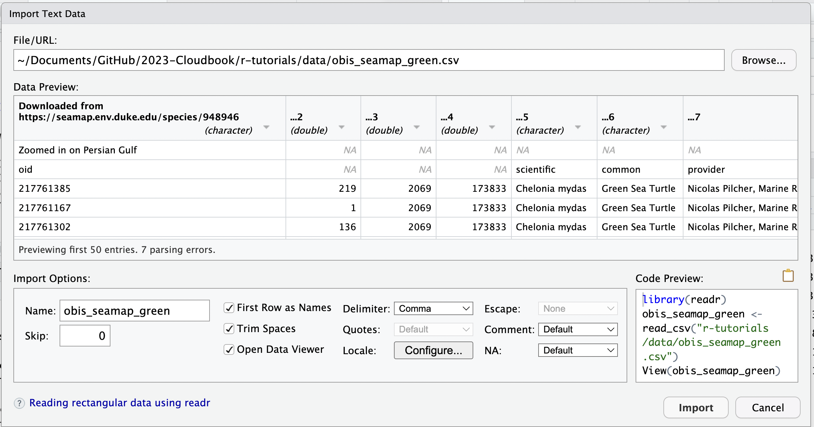
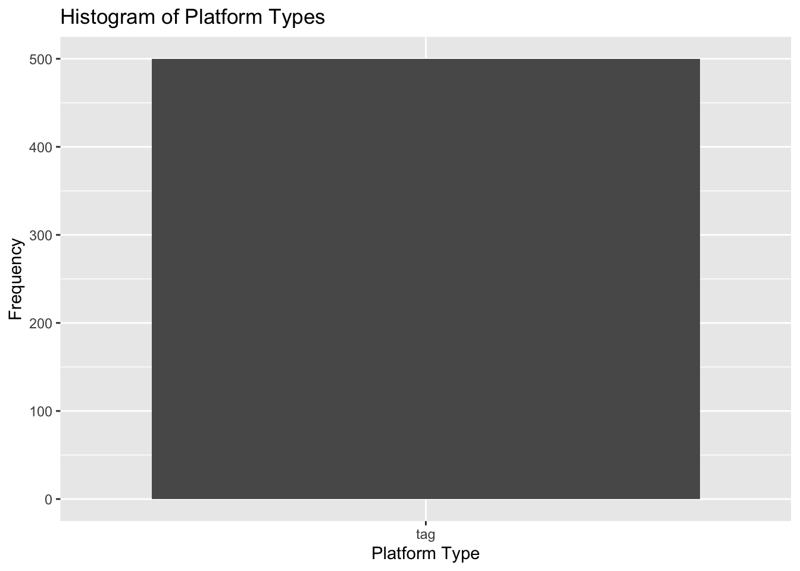
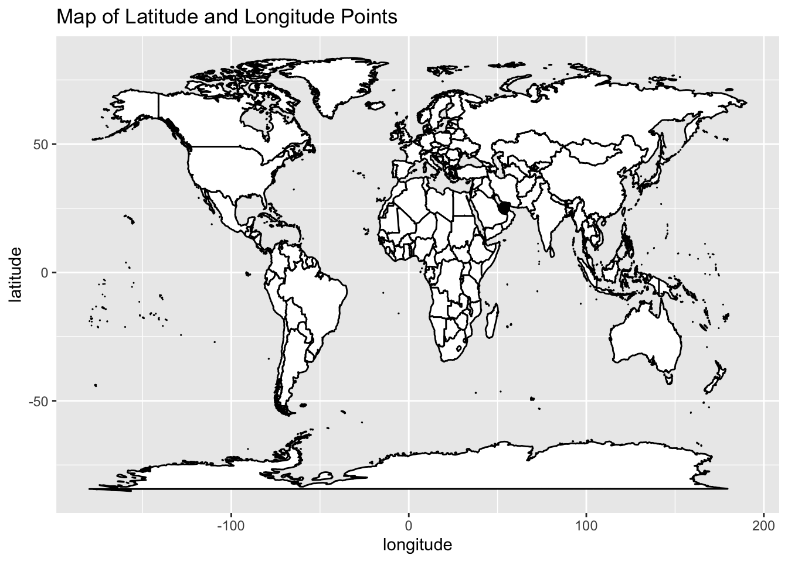
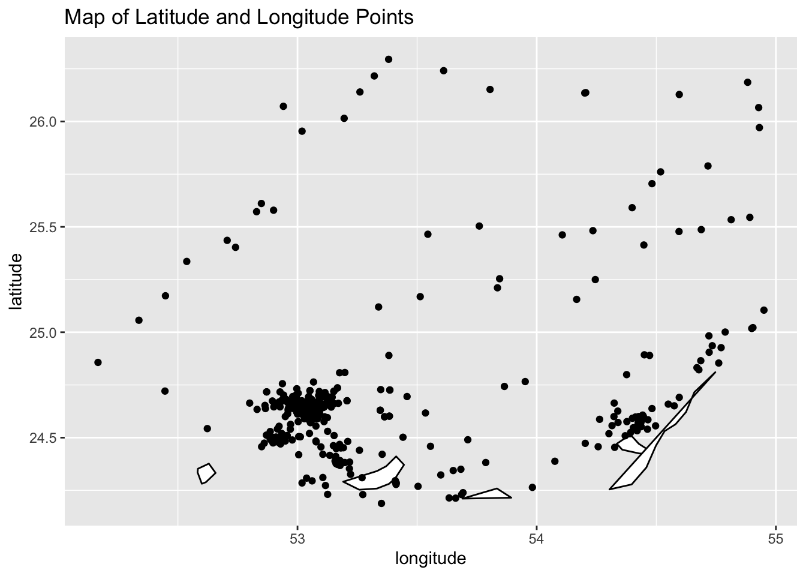

getwd()R - Read in data
Syntax tips
xyz::fun() means function fun() in the xyz package. I will often use this when I don’t want to call library() to load the whole xyz package. Why? Because remembering to call library() slows me down and when I forget I get errors. Instead I tend to load the major packages (like library(tidyverse) and library(sf)) for which I need many functions.
File not found
The top error for new users is “File not found.” You know they file is there, but R says “File not found.” File locations are relative to your current location. Your current location if you are in a Quarto or Rmarkdown file is the folder with that file! This means that code that works on the command line, fails in a Quarto or RMarkdown document. Oh no!
Try this in the Quarto document versus in the Console tab.
This means that a normal file location can break:
.Current location..Back one folderfolder nameEnter this folder~Home directory
./data/myfile.csvmeans current location > data folder > myfile.csv in that folder. But if your current location changes, that code breaks.
Solution 1 - full file path
Always use the full file path:
~/r-tutorials/data/myfile.csvHome > r-tutorials folder > data folder > myfile.csv
This works until you move the r-tutorials folder somewhere else.
Solution 2: the here package
This is the what experienced R users use. here() is the location of the base of your project. As long as you are in an RStudio project, it will return the base of that project.
This is what mine shows (I am on my laptop). It is the same inside a Quarto document, at the console and in scripts.
here::i_am("r-tutorials/03-r-read-in-data.qmd")here() starts at /Users/eli.holmes/Documents/GitHub/EDMW-EarthData-Workshop-2024here::here()[1] "/Users/eli.holmes/Documents/GitHub/EDMW-EarthData-Workshop-2024"Now to specify a data file, I use
fil <- here::here("r-tutorials", "data", "myfile.csv")
fil[1] "/Users/eli.holmes/Documents/GitHub/EDMW-EarthData-Workshop-2024/r-tutorials/data/myfile.csv"This fully specifies the file location.
Don’t use setwd()
This changes your working directory and although it seems to help in the short-run, it causes all kinds of problems later.
Import a csv file
We will use the Import Dataset widget in the Environment tab.
- Click the Environment tag and then Import Dataset
- Choose “From Text (readr)”
- Browse to
obis_seamap_green.csvin thedatafolder. - You should now see a preview of the data.

Ok first thing we see is that we have 2 lines at the top of our data file. Put 2 in the Skip box to skip past those. Now the data and column headers should look right.
Notice that it also shows us the R code. We can copy that and run it directly if we wanted. But we can also just click the Import button.
R Code
The import box helpfully shows us the R code to use. But this will break inside a Quarto file because the file path is wrong. This works in the Console or a script but not in a Quarto or RMarkdown file.
library(readr)
obis_seamap_green <- read_csv("r-tutorials/data/obis_seamap_green.csv",
skip = 2)Let’s make this code more robust:
library(readr)
fil <- here::here("r-tutorials", "data", "obis_seamap_green.csv")
obis_seamap_green <- read_csv(fil,
skip = 2)Rows: 5356 Columns: 15
── Column specification ────────────────────────────────────────────────────────
Delimiter: ","
chr (7): scientific, common, provider, obs_date, date_time, ds_type, platform
dbl (8): oid, id, dataset_id, tsn, latitude, longitude, lprecision, count
ℹ Use `spec()` to retrieve the full column specification for this data.
ℹ Specify the column types or set `show_col_types = FALSE` to quiet this message.Show the data
obis_seamap_green# A tibble: 5,356 × 15
oid id dataset_id tsn scientific common provider latitude longitude
<dbl> <dbl> <dbl> <dbl> <chr> <chr> <chr> <dbl> <dbl>
1 2.18e8 219 2069 173833 Chelonia … Green… Nicolas… 24.6 53.0
2 2.18e8 1 2069 173833 Chelonia … Green… Nicolas… 24.6 53.0
3 2.18e8 136 2069 173833 Chelonia … Green… Nicolas… 24.6 53.1
4 2.18e8 258 2069 173833 Chelonia … Green… Nicolas… 24.6 53.0
5 2.18e8 292 2069 173833 Chelonia … Green… Nicolas… 24.6 53.0
6 2.18e8 259 2069 173833 Chelonia … Green… Nicolas… 24.6 53.0
7 2.18e8 293 2069 173833 Chelonia … Green… Nicolas… 24.6 53.0
8 2.18e8 2 2069 173833 Chelonia … Green… Nicolas… 24.6 53.1
9 2.18e8 183 2069 173833 Chelonia … Green… Nicolas… 24.6 53.1
10 2.18e8 184 2069 173833 Chelonia … Green… Nicolas… 24.6 53.1
# ℹ 5,346 more rows
# ℹ 6 more variables: lprecision <dbl>, obs_date <chr>, date_time <chr>,
# count <dbl>, ds_type <chr>, platform <chr>Get the columns
Column names.
colnames(obis_seamap_green) [1] "oid" "id" "dataset_id" "tsn" "scientific"
[6] "common" "provider" "latitude" "longitude" "lprecision"
[11] "obs_date" "date_time" "count" "ds_type" "platform" We select a column with $ like so. Notice how RStudio suggest the names.
obis_seamap_green$date_time [1] "5/16/16 6:54" "5/16/16 6:54" "5/16/16 6:55" "5/16/16 6:56"
[5] "5/16/16 6:56" "5/17/16 5:40" "5/17/16 6:32" "5/17/16 11:30"
[9] "5/17/16 11:32" "5/17/16 11:32" "5/17/16 13:23" "5/18/16 6:16"
[13] "5/18/16 6:17" "5/18/16 9:40" "5/18/16 9:40" "5/18/16 9:41"
[17] "5/18/16 11:15" "5/18/16 11:24" "5/18/16 11:25" "5/18/16 12:33"
[21] "5/18/16 22:12" "5/18/16 23:54" "5/19/16 6:38" "5/19/16 11:09"
[25] "5/19/16 11:09" "5/19/16 11:12" "5/19/16 11:13" "5/19/16 11:15"
[29] "5/19/16 12:32" "5/19/16 12:38" "5/19/16 22:03" "5/19/16 22:03"
[33] "5/19/16 22:05" "5/19/16 23:40" "5/20/16 10:53" "5/20/16 10:54"
[37] "5/20/16 10:59" "5/20/16 10:59" "5/20/16 12:39" "5/20/16 12:42"
[41] "5/20/16 13:54" "5/20/16 19:11" "5/20/16 23:30" "5/20/16 23:33"
[45] "5/20/16 23:36" "5/21/16 6:51" "5/21/16 10:41" "5/21/16 10:41"
[49] "5/21/16 10:45" "5/21/16 10:53" "5/21/16 12:26" "5/21/16 12:26"
[53] "5/21/16 15:03" "5/21/16 23:15" "5/21/16 23:20" "5/21/16 23:26"
[57] "5/22/16 1:52" "5/22/16 10:29" "5/22/16 10:35" "5/22/16 10:35"
[61] "5/22/16 10:37" "5/22/16 12:14" "5/22/16 12:59" "5/22/16 15:10"
[65] "5/22/16 23:04" "5/23/16 6:53" "5/23/16 6:57" "5/23/16 10:22"
[69] "5/23/16 10:25" "5/23/16 10:30" "5/23/16 10:30" "5/23/16 12:06"
[73] "5/23/16 12:06" "5/23/16 12:31" "5/23/16 22:51" "5/23/16 23:00"
[77] "5/24/16 5:01" "5/24/16 11:50" "5/24/16 11:50" "5/24/16 11:52"
[81] "5/24/16 11:55" "5/24/16 11:57" "5/24/16 11:57" "5/24/16 13:48"
[85] "5/24/16 22:44" "5/24/16 22:47" "5/24/16 22:48" "5/25/16 6:18"
[89] "5/25/16 11:40" "5/25/16 11:41" "5/25/16 11:41" "5/25/16 11:42"
[93] "5/25/16 11:43" "5/25/16 13:21" "5/25/16 13:22" "5/25/16 19:09"
[97] "5/25/16 22:30" "5/25/16 22:33" "5/26/16 6:51" "5/26/16 9:52"
[101] "5/26/16 11:27" "5/26/16 11:31" "5/26/16 11:31" "5/26/16 11:35"
[105] "5/26/16 11:36" "5/26/16 13:04" "5/26/16 22:21" "5/26/16 23:59"
[109] "5/27/16 1:26" "5/27/16 6:29" "5/27/16 9:39" "5/27/16 9:39"
[113] "5/27/16 11:14" "5/27/16 11:18" "5/27/16 12:30" "5/27/16 13:57"
[117] "5/27/16 14:15" "5/27/16 22:12" "5/27/16 23:48" "5/27/16 23:51"
[121] "5/28/16 5:12" "5/28/16 6:48" "5/28/16 9:31" "5/28/16 11:12"
[125] "5/28/16 11:15" "5/28/16 11:15" "5/28/16 13:51" "5/28/16 13:54"
[129] "5/28/16 13:54" "5/28/16 23:37" "5/28/16 23:37" "5/29/16 6:31"
[133] "5/29/16 6:39" "5/29/16 10:50" "5/29/16 10:50" "5/29/16 11:00"
[137] "5/29/16 11:00" "5/29/16 12:39" "5/29/16 13:21" "5/29/16 13:28"
[141] "5/29/16 19:26" "5/29/16 23:31" "5/30/16 4:30" "5/30/16 7:55"
[145] "5/30/16 10:40" "5/30/16 10:40" "5/30/16 10:43" "5/30/16 10:43"
[149] "5/30/16 12:56" "5/30/16 13:36" "5/30/16 23:14" "5/30/16 23:16"
[153] "5/30/16 23:20" "5/31/16 1:10" "5/31/16 2:46" "5/31/16 5:53"
[157] "5/31/16 6:49" "5/31/16 10:31" "5/31/16 10:31" "5/31/16 10:34"
[161] "5/31/16 10:34" "5/31/16 12:13" "5/31/16 12:34" "5/31/16 13:33"
[165] "6/1/16 2:14" "6/1/16 2:43" "6/1/16 5:29" "6/1/16 10:22"
[169] "6/1/16 10:25" "6/1/16 10:25" "6/1/16 12:05" "6/1/16 13:13"
[173] "6/1/16 13:47" "6/1/16 14:39" "6/2/16 1:49" "6/2/16 6:49"
[177] "6/2/16 10:08" "6/2/16 10:08" "6/2/16 10:12" "6/2/16 11:48"
[181] "6/2/16 11:50" "6/2/16 11:58" "6/2/16 16:27" "6/2/16 22:40"
[185] "6/2/16 22:42" "6/2/16 22:50" "6/3/16 0:23" "6/3/16 6:35"
[189] "6/3/16 9:58" "6/3/16 11:36" "6/3/16 11:36" "6/3/16 11:42"
[193] "6/3/16 12:49" "6/3/16 12:57" "6/3/16 22:29" "6/3/16 22:29"
[197] "6/4/16 7:05" "6/4/16 11:24" "6/4/16 11:30" "6/4/16 11:32"
[201] "6/4/16 22:17" "6/4/16 22:17" "6/4/16 22:23" "6/5/16 3:29"
[205] "6/5/16 9:35" "6/5/16 11:12" "6/5/16 13:50" "6/5/16 14:16"
[209] "6/5/16 22:11" "6/5/16 23:45" "6/5/16 23:47" "6/6/16 5:30"
[213] "6/6/16 5:32" "6/6/16 7:09" "6/6/16 11:01" "6/6/16 11:04"
[217] "6/6/16 11:07" "6/6/16 23:38" "6/7/16 5:55" "6/7/16 6:48"
[221] "6/7/16 10:53" "6/7/16 12:38" "6/7/16 13:45" "6/8/16 10:39"
[225] "6/8/16 10:42" "6/8/16 23:15" "6/9/16 10:32" "6/9/16 12:15"
[229] "6/9/16 23:11" "6/10/16 10:15" "6/10/16 15:04" "6/10/16 22:52"
[233] "6/11/16 6:21" "6/11/16 11:46" "6/11/16 14:31" "6/11/16 22:40"
[237] "6/12/16 1:28" "6/12/16 12:51" "6/12/16 16:13" "6/12/16 22:35"
[241] "6/13/16 15:07" "6/13/16 22:19" "6/14/16 9:39" "6/14/16 23:42"
[245] "6/15/16 1:40" "6/15/16 11:05" "6/15/16 18:37" "6/16/16 1:02"
[249] "6/16/16 7:01" "6/16/16 13:45" "6/17/16 3:51" "6/17/16 5:49"
[253] "6/17/16 10:40" "6/17/16 16:10" "6/18/16 8:00" "6/18/16 10:30"
[257] "6/18/16 23:00" "6/19/16 7:40" "6/19/16 11:58" "6/20/16 1:41"
[261] "6/20/16 11:50" "6/21/16 1:03" "6/21/16 12:44" "8/1/16 13:11"
[265] "8/2/16 6:36" "8/2/16 6:36" "8/2/16 12:00" "8/2/16 12:03"
[269] "8/2/16 13:06" "8/2/16 22:53" "8/2/16 22:54" "8/3/16 2:45"
[273] "8/3/16 6:17" "8/3/16 6:24" "8/3/16 11:52" "8/3/16 11:57"
[277] "8/3/16 11:58" "8/3/16 12:40" "8/3/16 14:26" "8/3/16 14:28"
[281] "8/3/16 16:37" "8/3/16 22:41" "8/3/16 22:42" "8/3/16 22:42"
[285] "8/3/16 22:43" "8/4/16 6:44" "8/4/16 6:48" "8/4/16 10:00"
[289] "8/4/16 11:35" "8/4/16 11:38" "8/4/16 13:50" "8/4/16 13:56"
[293] "8/4/16 14:16" "8/4/16 14:33" "8/4/16 22:28" "8/4/16 22:29"
[297] "8/4/16 22:29" "8/4/16 22:30" "8/4/16 22:31" "8/5/16 6:20"
[301] "8/5/16 11:22" "8/5/16 11:24" "8/5/16 11:29" "8/5/16 11:33"
[305] "8/5/16 11:35" "8/5/16 14:07" "8/5/16 14:10" "8/5/16 19:16"
[309] "8/5/16 22:19" "8/5/16 22:20" "8/5/16 22:20" "8/5/16 23:56"
[313] "8/5/16 23:58" "8/6/16 6:02" "8/6/16 11:11" "8/6/16 11:12"
[317] "8/6/16 11:16" "8/6/16 11:16" "8/6/16 13:01" "8/6/16 13:06"
[321] "8/6/16 15:17" "8/6/16 22:05" "8/6/16 23:45" "8/6/16 23:46"
[325] "8/6/16 23:46" "8/6/16 23:49" "8/6/16 23:56" "8/7/16 4:11"
[329] "8/7/16 6:39" "8/7/16 11:03" "8/7/16 11:06" "8/7/16 11:06"
[333] "8/7/16 12:40" "8/7/16 12:41" "8/7/16 13:42" "8/7/16 14:19"
[337] "8/7/16 22:02" "8/7/16 23:35" "8/7/16 23:37" "8/7/16 23:39"
[341] "8/7/16 23:41" "8/8/16 2:48" "8/8/16 6:15" "8/8/16 6:16"
[345] "8/8/16 6:20" "8/8/16 10:52" "8/8/16 12:33" "8/8/16 12:34"
[349] "8/8/16 13:27" "8/8/16 13:29" "8/8/16 13:32" "8/8/16 15:50"
[353] "8/8/16 23:22" "8/8/16 23:24" "8/8/16 23:26" "8/9/16 3:57"
[357] "8/9/16 6:44" "8/9/16 10:41" "8/9/16 10:46" "8/9/16 12:21"
[361] "8/9/16 12:25" "8/9/16 12:25" "8/9/16 13:43" "8/9/16 23:09"
[365] "8/9/16 23:10" "8/9/16 23:16" "8/9/16 23:17" "8/10/16 10:35"
[369] "8/10/16 12:11" "8/10/16 12:12" "8/10/16 13:01" "8/10/16 13:10"
[373] "8/10/16 19:12" "8/10/16 22:59" "8/10/16 22:59" "8/10/16 23:03"
[377] "8/10/16 23:09" "8/11/16 5:56" "8/11/16 6:59" "8/11/16 6:59"
[381] "8/11/16 10:22" "8/11/16 12:04" "8/11/16 12:07" "8/11/16 12:55"
[385] "8/11/16 14:40" "8/11/16 22:50" "8/11/16 22:55" "8/12/16 3:14"
[389] "8/12/16 6:33" "8/12/16 6:36" "8/12/16 6:36" "8/12/16 10:07"
[393] "8/12/16 11:54" "8/12/16 13:46" "8/12/16 13:47" "8/12/16 13:59"
[397] "8/12/16 22:39" "8/13/16 2:54" "8/13/16 6:12" "8/13/16 11:35"
[401] "8/13/16 11:42" "8/13/16 11:42" "8/13/16 13:16" "8/13/16 13:18"
[405] "8/13/16 14:57" "8/13/16 22:27" "8/13/16 22:27" "8/13/16 22:30"
[409] "8/13/16 22:34" "8/14/16 11:25" "8/14/16 11:26" "8/14/16 13:02"
[413] "8/14/16 14:40" "8/14/16 15:44" "8/14/16 22:13" "8/14/16 22:16"
[417] "8/14/16 22:19" "8/14/16 23:56" "8/14/16 23:58" "8/15/16 5:29"
[421] "8/15/16 11:10" "8/15/16 11:11" "8/15/16 13:54" "8/15/16 13:57"
[425] "8/15/16 13:58" "8/15/16 22:07" "8/15/16 23:45" "8/15/16 23:48"
[429] "8/15/16 23:50" "8/15/16 23:51" "8/16/16 4:18" "8/16/16 5:52"
[433] "8/16/16 6:04" "8/16/16 11:00" "8/16/16 11:02" "8/16/16 11:06"
[437] "8/16/16 12:14" "8/16/16 13:20" "8/16/16 15:20" "8/16/16 23:33"
[441] "8/16/16 23:36" "8/16/16 23:38" "8/17/16 2:18" "8/17/16 5:39"
[445] "8/17/16 10:49" "8/17/16 12:34" "8/17/16 12:35" "8/17/16 14:29"
[449] "8/17/16 14:37" "8/17/16 16:12" "8/17/16 23:20" "8/17/16 23:26"
[453] "8/17/16 23:29" "8/17/16 23:30" "8/18/16 2:02" "8/18/16 3:39"
[457] "8/18/16 6:53" "8/18/16 10:38" "8/18/16 12:23" "8/18/16 12:25"
[461] "8/18/16 12:25" "8/18/16 13:16" "8/18/16 13:19" "8/18/16 23:10"
[465] "8/18/16 23:10" "8/19/16 5:45" "8/19/16 6:31" "8/19/16 10:33"
[469] "8/19/16 12:13" "8/19/16 12:39" "8/19/16 12:40" "8/19/16 13:31"
[473] "8/19/16 14:15" "8/19/16 22:56" "8/19/16 23:03" "8/19/16 23:05"
[477] "8/19/16 23:06" "8/20/16 11:56" "8/20/16 11:56" "8/20/16 11:57"
[481] "8/20/16 11:59" "8/20/16 12:06" "8/20/16 12:52" "8/20/16 12:55"
[485] "8/20/16 19:05" "8/20/16 19:06" "8/20/16 19:08" "8/20/16 22:50"
[489] "8/20/16 22:50" "8/20/16 22:51" "8/20/16 22:53" "8/21/16 1:40"
[493] "8/21/16 5:48" "8/21/16 5:55" "8/21/16 6:49" "8/21/16 11:44"
[497] "8/21/16 11:51" "8/21/16 11:55" "8/21/16 12:39" "8/21/16 13:29"
[501] "8/21/16 14:08" "8/21/16 14:18" "8/21/16 22:35" "8/21/16 22:39"
[505] "8/21/16 22:43" "8/22/16 1:57" "8/22/16 6:25" "8/22/16 9:54"
[509] "8/22/16 11:33" "8/22/16 11:33" "8/22/16 11:35" "8/22/16 11:36"
[513] "8/22/16 11:39" "8/22/16 13:33" "8/22/16 22:25" "8/22/16 22:26"
[517] "8/22/16 22:28" "8/22/16 22:30" "8/22/16 22:31" "8/23/16 6:48"
[521] "8/23/16 11:21" "8/23/16 11:23" "8/23/16 11:26" "8/23/16 11:28"
[525] "8/23/16 11:32" "8/23/16 13:59" "8/23/16 14:26" "8/23/16 22:13"
[529] "8/23/16 22:16" "8/23/16 23:51" "8/23/16 23:52" "8/23/16 23:53"
[533] "8/23/16 23:59" "8/24/16 11:13" "8/24/16 11:14" "8/24/16 11:14"
[537] "8/24/16 11:16" "8/24/16 11:17" "8/24/16 13:55" "8/24/16 14:01"
[541] "8/24/16 22:03" "8/24/16 22:06" "8/24/16 23:40" "8/24/16 23:40"
[545] "8/24/16 23:41" "8/24/16 23:44" "8/24/16 23:46" "8/25/16 5:23"
[549] "8/25/16 6:09" "8/25/16 10:56" "8/25/16 11:00" "8/25/16 11:02"
[553] "8/25/16 11:02" "8/25/16 13:27" "8/25/16 13:28" "8/25/16 15:09"
[557] "8/25/16 23:32" "8/25/16 23:34" "8/25/16 23:36" "8/25/16 23:41"
[561] "8/25/16 23:41" "8/26/16 5:47" "8/26/16 10:44" "8/26/16 12:31"
[565] "8/26/16 12:33" "8/26/16 12:33" "8/26/16 12:33" "8/26/16 12:33"
[569] "8/26/16 13:05" "8/26/16 21:41" "8/26/16 23:17" "8/26/16 23:18"
[573] "8/26/16 23:18" "8/26/16 23:18" "8/26/16 23:25" "8/27/16 1:29"
[577] "8/27/16 3:35" "8/27/16 5:36" "8/27/16 10:46" "8/27/16 12:20"
[581] "8/27/16 12:20" "8/27/16 12:39" "8/27/16 13:14" "8/27/16 14:17"
[585] "8/27/16 14:49" "8/27/16 23:07" "8/27/16 23:07" "8/27/16 23:12"
[589] "8/27/16 23:15" "8/28/16 6:02" "8/28/16 12:11" "8/28/16 12:11"
[593] "8/28/16 13:00" "8/28/16 13:01" "8/28/16 13:44" "8/28/16 13:51"
[597] "8/28/16 13:56" "8/28/16 22:55" "8/28/16 22:59" "8/28/16 22:59"
[601] "8/28/16 23:02" "8/29/16 10:11" "8/29/16 10:14" "8/29/16 10:17"
[605] "8/29/16 11:58" "8/29/16 12:00" "8/29/16 12:02" "8/29/16 13:16"
[609] "8/29/16 19:24" "8/29/16 22:48" "8/29/16 22:50" "8/29/16 22:51"
[613] "8/29/16 22:52" "8/30/16 2:01" "8/30/16 2:56" "8/30/16 6:08"
[617] "8/30/16 6:11" "8/30/16 11:42" "8/30/16 11:46" "8/30/16 11:46"
[621] "8/30/16 13:07" "8/30/16 13:09" "8/30/16 14:18" "8/30/16 14:46"
[625] "8/30/16 22:37" "8/30/16 22:42" "8/31/16 0:22" "8/31/16 2:52"
[629] "8/31/16 5:43" "8/31/16 11:31" "8/31/16 11:36" "8/31/16 11:36"
[633] "8/31/16 11:38" "8/31/16 11:40" "8/31/16 13:53" "8/31/16 22:25"
[637] "8/31/16 22:27" "8/31/16 22:30" "9/1/16 6:25" "9/1/16 11:19"
[641] "9/1/16 11:20" "9/1/16 11:20" "9/1/16 11:21" "9/1/16 11:29"
[645] "9/1/16 13:57" "9/1/16 23:49" "9/1/16 23:50" "9/1/16 23:58"
[649] "9/2/16 6:42" "9/2/16 6:46" "9/2/16 9:31" "9/2/16 11:09"
[653] "9/2/16 11:12" "9/2/16 11:12" "9/2/16 11:12" "9/2/16 11:16"
[657] "9/2/16 21:59" "9/2/16 23:44" "9/2/16 23:45" "9/3/16 6:26"
[661] "9/3/16 11:01" "9/3/16 12:42" "9/3/16 13:34" "9/3/16 14:01"
[665] "9/3/16 14:02" "9/3/16 14:42" "9/3/16 19:21" "9/3/16 23:28"
[669] "9/3/16 23:29" "9/3/16 23:33" "9/4/16 3:46" "9/4/16 6:58"
[673] "9/4/16 10:48" "9/4/16 12:31" "9/4/16 13:25" "9/4/16 13:31"
[677] "9/4/16 14:19" "9/4/16 18:13" "9/4/16 19:00" "9/4/16 19:01"
[681] "9/4/16 23:17" "9/4/16 23:19" "9/5/16 6:41" "9/5/16 6:42"
[685] "9/5/16 10:39" "9/5/16 12:17" "9/5/16 12:19" "9/5/16 12:21"
[689] "9/5/16 14:41" "9/5/16 14:43" "9/5/16 23:11" "9/5/16 23:12"
[693] "9/6/16 5:29" "9/6/16 6:15" "9/6/16 10:22" "9/6/16 10:25"
[697] "9/6/16 10:29" "9/6/16 12:03" "9/6/16 12:09" "9/6/16 12:56"
[701] "9/6/16 22:59" "9/6/16 23:00" "9/7/16 3:10" "9/7/16 6:39"
[705] "9/7/16 6:48" "9/7/16 11:54" "9/7/16 11:56" "9/7/16 13:05"
[709] "9/7/16 13:39" "9/7/16 13:40" "9/7/16 17:53" "9/7/16 22:49"
[713] "9/7/16 22:52" "9/8/16 6:22" "9/8/16 6:25" "9/8/16 10:05"
[717] "9/8/16 11:45" "9/8/16 12:40" "9/8/16 13:06" "9/8/16 14:17"
[721] "9/8/16 22:32" "9/8/16 22:36" "9/9/16 2:41" "9/9/16 5:12"
[725] "9/9/16 6:03" "9/9/16 6:03" "9/9/16 6:57" "9/9/16 11:32"
[729] "9/9/16 11:34" "9/9/16 11:36" "9/9/16 13:58" "9/9/16 15:39"
[733] "9/10/16 2:56" "9/10/16 3:04" "9/10/16 6:38" "9/10/16 6:39"
[737] "9/10/16 11:19" "9/10/16 11:21" "9/10/16 13:30" "9/10/16 13:31"
[741] "9/10/16 13:32" "9/10/16 23:48" "9/11/16 6:17" "9/11/16 11:05"
[745] "9/11/16 13:07" "9/11/16 13:07" "9/11/16 13:39" "9/11/16 13:40"
[749] "9/11/16 23:37" "9/11/16 23:39" "9/11/16 23:44" "9/12/16 3:38"
[753] "9/12/16 5:53" "9/12/16 10:53" "9/12/16 10:55" "9/12/16 12:40"
[757] "9/12/16 13:25" "9/12/16 13:28" "9/12/16 14:23" "9/12/16 19:32"
[761] "9/12/16 21:50" "9/12/16 23:34" "9/13/16 4:42" "9/13/16 10:51"
[765] "9/13/16 12:27" "9/13/16 13:14" "9/13/16 14:58" "9/13/16 19:09"
[769] "9/13/16 23:23" "9/14/16 5:58" "9/14/16 6:01" "9/14/16 6:01"
[773] "9/14/16 13:04" "9/14/16 13:16" "9/14/16 13:18" "9/14/16 13:28"
[777] "9/14/16 14:42" "9/14/16 23:09" "9/14/16 23:11" "9/15/16 3:36"
[781] "9/15/16 5:44" "9/15/16 6:32" "9/15/16 6:34" "9/15/16 10:25"
[785] "9/15/16 12:04" "9/15/16 13:04" "9/15/16 13:07" "9/15/16 14:29"
[789] "9/15/16 22:57" "9/16/16 6:54" "9/16/16 6:58" "9/16/16 10:13"
[793] "9/16/16 11:49" "9/16/16 12:41" "9/16/16 14:28" "9/16/16 22:43"
[797] "9/16/16 22:44" "9/16/16 22:49" "9/17/16 2:41" "9/17/16 6:33"
[801] "9/17/16 6:37" "9/17/16 11:37" "9/17/16 11:41" "9/17/16 11:42"
[805] "9/17/16 11:46" "9/17/16 17:46" "9/17/16 22:33" "9/17/16 22:36"
[809] "9/18/16 6:16" "9/18/16 6:16" "9/18/16 11:27" "9/18/16 13:28"
[813] "9/18/16 14:37" "9/18/16 15:09" "9/18/16 19:07" "9/18/16 22:21"
[817] "9/18/16 22:24" "9/19/16 1:45" "9/19/16 1:58" "9/19/16 5:51"
[821] "9/19/16 5:52" "9/19/16 11:13" "9/19/16 11:14" "9/19/16 13:50"
[825] "9/19/16 14:07" "9/19/16 15:46" "9/20/16 1:06" "9/20/16 6:26"
[829] "9/20/16 7:11" "9/20/16 11:08" "9/20/16 12:41" "9/20/16 15:07"
[833] "9/20/16 22:03" "9/20/16 23:41" "9/21/16 2:14" "9/21/16 6:49"
[837] "9/21/16 10:56" "9/21/16 12:41" "9/21/16 13:22" "9/21/16 13:54"
[841] "9/21/16 16:24" "9/21/16 23:24" "9/22/16 4:02" "9/22/16 6:30"
[845] "9/22/16 6:31" "9/22/16 12:27" "9/22/16 13:16" "9/22/16 14:51"
[849] "9/22/16 19:24" "9/22/16 23:19" "9/23/16 3:23" "9/23/16 6:08"
[853] "9/23/16 12:11" "9/23/16 12:59" "9/23/16 13:07" "9/23/16 14:36"
[857] "9/23/16 19:02" "9/24/16 3:16" "9/24/16 6:42" "9/24/16 6:47"
[861] "9/24/16 11:59" "9/24/16 12:40" "9/25/16 3:05" "9/25/16 14:11"
[865] "9/27/16 13:56" "9/27/16 22:23" "9/28/16 11:19" "9/28/16 14:18"
[869] "9/28/16 19:03" "9/28/16 23:46" "9/28/16 23:53" "9/29/16 1:28"
[873] "9/29/16 5:50" "9/29/16 11:04" "9/29/16 11:04" "9/29/16 23:40"
[877] "9/30/16 6:23" "9/30/16 10:52" "10/1/16 3:46" "10/1/16 12:25"
[881] "10/1/16 14:30" "10/2/16 10:33" "10/2/16 13:57" "10/2/16 19:16"
[885] "10/2/16 23:01" "10/3/16 12:03" "10/3/16 15:07" "10/3/16 19:00"
[889] "10/3/16 22:55" "10/4/16 11:50" "10/4/16 15:56" "10/4/16 22:46"
[893] "10/5/16 6:21" "10/5/16 11:39" "10/6/16 5:07" "10/6/16 11:27"
[897] "10/6/16 14:23" "10/7/16 15:18" "10/7/16 15:19" "10/7/16 23:49"
[901] "10/7/16 23:51" "10/8/16 11:05" "10/8/16 15:55" "10/8/16 23:32"
[905] "10/8/16 23:35" "10/9/16 14:50" "10/9/16 14:59" "10/9/16 23:24"
[909] "10/9/16 23:27" "10/10/16 5:22" "10/10/16 14:55" "10/10/16 16:34"
[913] "10/11/16 4:58" "10/11/16 17:06" "10/12/16 13:30" "10/12/16 22:55"
[917] "10/13/16 11:47" "10/13/16 17:08" "10/13/16 22:37" "10/13/16 22:43"
[921] "10/14/16 3:41" "10/14/16 7:18" "10/14/16 13:55" "10/14/16 22:28"
[925] "10/15/16 11:24" "10/15/16 14:03" "10/15/16 15:42" "10/15/16 22:15"
[929] "10/15/16 23:51" "10/15/16 23:57" "10/16/16 6:31" "10/16/16 14:58"
[933] "10/16/16 15:03" "10/16/16 17:44" "10/16/16 22:04" "10/16/16 23:47"
[937] "10/17/16 13:09" "10/17/16 13:14" "10/17/16 19:07" "10/17/16 23:32"
[941] "10/17/16 23:32" "10/18/16 10:45" "10/18/16 14:24" "10/18/16 23:19"
[945] "10/18/16 23:24" "10/18/16 23:27" "10/19/16 5:41" "10/19/16 6:28"
[949] "10/19/16 7:15" "10/19/16 10:39" "10/19/16 10:42" "10/19/16 23:12"
[953] "10/20/16 0:48" "10/20/16 6:57" "10/20/16 10:27" "10/20/16 23:02"
[957] "10/21/16 6:32" "10/21/16 11:57" "10/21/16 17:48" "10/21/16 22:44"
[961] "10/22/16 10:04" "10/22/16 13:33" "10/22/16 22:38" "10/23/16 11:40"
[965] "10/23/16 22:25" "10/23/16 22:26" "10/24/16 6:28" "10/24/16 11:25"
[969] "10/24/16 22:16" "10/25/16 1:25" "10/25/16 6:47" "10/25/16 13:29"
[973] "10/26/16 14:31" "10/27/16 13:59" "10/27/16 23:16" "10/27/16 23:19"
[977] "10/28/16 2:27" "10/28/16 14:36" "10/28/16 14:43" "10/28/16 23:05"
[981] "10/29/16 12:04" "10/29/16 14:30" "10/29/16 14:56" "10/29/16 22:55"
[985] "10/30/16 6:49" "10/30/16 14:24" "10/30/16 16:24" "10/30/16 22:43"
[989] "10/30/16 22:46" "10/31/16 6:22" "10/31/16 11:43" "10/31/16 13:56"
[993] "10/31/16 15:36" "10/31/16 22:35" "10/31/16 22:36" "11/1/16 5:16"
[997] "11/1/16 11:27" "11/1/16 11:31" "11/1/16 13:26" "11/1/16 22:20"
[1001] "11/2/16 13:43" "11/2/16 14:29" "11/2/16 15:18" "11/2/16 23:54"
[1005] "11/2/16 23:58" "11/3/16 3:56" "11/3/16 5:26" "11/3/16 11:03"
[1009] "11/3/16 15:10" "11/3/16 23:35" "11/4/16 10:58" "11/4/16 13:55"
[1013] "11/4/16 23:29" "11/5/16 7:12" "11/5/16 14:44" "11/5/16 14:44"
[1017] "11/5/16 23:15" "11/5/16 23:17" "11/5/16 23:18" "11/6/16 10:34"
[1021] "11/6/16 13:10" "11/6/16 14:03" "11/6/16 23:04" "11/6/16 23:06"
[1025] "11/7/16 3:09" "11/7/16 6:35" "11/7/16 12:07" "11/7/16 13:33"
[1029] "11/7/16 14:20" "11/7/16 22:53" "11/8/16 0:39" "11/8/16 1:12"
[1033] "11/8/16 10:17" "11/8/16 11:54" "11/8/16 14:08" "11/9/16 11:37"
[1037] "11/9/16 13:30" "11/9/16 22:32" "11/9/16 22:36" "11/10/16 2:57"
[1041] "11/10/16 11:25" "11/10/16 11:26" "11/10/16 11:32" "11/10/16 22:25"
[1045] "11/10/16 22:25" "11/11/16 11:13" "11/11/16 11:14" "11/11/16 11:15"
[1049] "11/11/16 22:08" "11/11/16 23:45" "11/11/16 23:45" "11/12/16 1:58"
[1053] "11/12/16 1:58" "11/12/16 11:00" "11/12/16 11:09" "11/12/16 15:00"
[1057] "11/12/16 23:41" "11/13/16 1:24" "11/13/16 10:55" "11/13/16 10:56"
[1061] "11/13/16 12:37" "11/13/16 23:25" "11/13/16 23:35" "11/14/16 6:35"
[1065] "11/14/16 12:25" "11/14/16 13:08" "11/14/16 13:13" "11/14/16 23:12"
[1069] "11/14/16 23:13" "11/15/16 3:42" "11/15/16 3:43" "11/15/16 10:28"
[1073] "11/15/16 12:12" "11/15/16 14:22" "11/15/16 23:00" "11/16/16 3:07"
[1077] "11/16/16 6:54" "11/16/16 14:07" "11/16/16 14:16" "11/16/16 15:32"
[1081] "11/16/16 22:56" "11/17/16 5:35" "11/17/16 5:37" "11/17/16 13:25"
[1085] "11/17/16 13:33" "11/17/16 13:36" "11/17/16 22:44" "11/18/16 4:15"
[1089] "11/18/16 6:53" "11/18/16 11:38" "11/18/16 13:12" "11/18/16 13:56"
[1093] "11/18/16 22:30" "11/19/16 6:34" "11/19/16 11:24" "11/19/16 13:45"
[1097] "11/19/16 14:07" "11/19/16 22:19" "11/19/16 22:19" "11/20/16 11:19"
[1101] "11/20/16 11:19" "11/20/16 11:20" "11/20/16 19:04" "11/20/16 19:04"
[1105] "11/20/16 23:47" "11/21/16 2:15" "11/21/16 10:58" "11/21/16 11:07"
[1109] "11/21/16 13:22" "11/21/16 21:58" "11/21/16 23:42" "11/22/16 6:25"
[1113] "11/22/16 6:29" "11/22/16 10:52" "11/22/16 13:11" "11/23/16 6:51"
[1117] "11/23/16 12:22" "11/23/16 12:24" "11/23/16 23:12" "11/24/16 6:33"
[1121] "11/24/16 10:28" "11/24/16 14:05" "11/24/16 23:05" "11/25/16 6:12"
[1125] "11/25/16 10:19" "11/25/16 12:04" "11/25/16 22:53" "11/26/16 6:46"
[1129] "11/26/16 13:43" "11/26/16 15:22" "11/26/16 22:45" "11/27/16 4:15"
[1133] "11/27/16 11:40" "11/27/16 16:37" "11/27/16 22:33" "11/28/16 6:46"
[1137] "11/28/16 11:25" "11/28/16 13:38" "11/28/16 15:18" "11/28/16 22:16"
[1141] "11/28/16 23:59" "11/29/16 11:14" "11/29/16 11:18" "11/29/16 13:31"
[1145] "11/29/16 19:18" "11/29/16 19:19" "11/29/16 23:45" "11/30/16 3:47"
[1149] "11/30/16 6:04" "11/30/16 6:08" "11/30/16 11:01" "11/30/16 12:42"
[1153] "11/30/16 12:44" "12/1/16 3:31" "12/1/16 6:39" "12/1/16 12:34"
[1157] "12/1/16 12:46" "12/1/16 12:47" "12/1/16 23:17" "12/2/16 5:23"
[1161] "12/2/16 10:42" "12/2/16 12:19" "12/2/16 14:30" "12/2/16 23:13"
[1165] "12/2/16 23:17" "12/3/16 6:40" "12/3/16 6:42" "12/3/16 12:10"
[1169] "12/3/16 13:25" "12/3/16 13:32" "12/3/16 23:03" "12/4/16 3:00"
[1173] "12/4/16 6:27" "12/4/16 11:52" "12/4/16 11:56" "12/4/16 14:10"
[1177] "12/4/16 22:51" "12/5/16 3:22" "12/5/16 6:04" "12/5/16 6:59"
[1181] "12/5/16 11:43" "12/5/16 11:46" "12/5/16 12:48" "12/6/16 6:37"
[1185] "12/6/16 11:37" "12/6/16 11:39" "12/6/16 13:44" "12/6/16 22:23"
[1189] "12/6/16 22:24" "12/7/16 13:31" "12/7/16 13:36" "12/7/16 13:38"
[1193] "12/7/16 23:51" "12/7/16 23:55" "12/8/16 5:51" "12/8/16 11:08"
[1197] "12/8/16 11:09" "12/8/16 15:10" "12/8/16 23:41" "12/9/16 6:15"
[1201] "12/9/16 6:24" "12/9/16 13:13" "12/9/16 14:27" "12/9/16 14:50"
[1205] "12/9/16 23:32" "12/10/16 6:49" "12/10/16 12:30" "12/10/16 17:14"
[1209] "12/10/16 23:25" "12/11/16 5:34" "12/11/16 5:37" "12/11/16 10:34"
[1213] "12/11/16 10:39" "12/11/16 12:21" "12/11/16 23:09" "12/12/16 6:07"
[1217] "12/12/16 6:53" "12/12/16 10:33" "12/12/16 14:47" "12/12/16 14:51"
[1221] "12/13/16 3:19" "12/13/16 11:52" "12/13/16 14:03" "12/13/16 14:09"
[1225] "12/13/16 22:50" "12/13/16 22:50" "12/14/16 1:15" "12/14/16 4:36"
[1229] "12/14/16 6:13" "12/14/16 10:07" "12/14/16 11:40" "12/14/16 13:58"
[1233] "12/15/16 3:13" "12/15/16 4:11" "12/15/16 5:57" "12/15/16 11:28"
[1237] "12/15/16 11:32" "12/15/16 13:55" "12/16/16 0:07" "12/16/16 6:27"
[1241] "12/16/16 6:31" "12/16/16 11:22" "12/16/16 13:09" "12/16/16 15:04"
[1245] "12/17/16 3:44" "12/17/16 6:10" "12/17/16 11:07" "12/17/16 11:08"
[1249] "12/17/16 18:06" "12/17/16 23:45" "12/18/16 3:36" "12/18/16 6:31"
[1253] "12/18/16 10:56" "12/18/16 10:58" "12/18/16 23:30" "12/19/16 3:24"
[1257] "12/19/16 12:25" "12/19/16 13:34" "12/19/16 15:18" "12/19/16 19:05"
[1261] "12/20/16 3:15" "12/20/16 5:55" "12/20/16 10:35" "12/20/16 12:17"
[1265] "12/20/16 12:19" "12/21/16 4:37" "12/21/16 10:21" "12/21/16 12:46"
[1269] "12/21/16 12:46" "12/21/16 22:56" "12/21/16 22:58" "12/22/16 2:52"
[1273] "12/22/16 6:45" "12/22/16 6:48" "12/22/16 10:12" "12/22/16 11:57"
[1277] "12/22/16 11:58" "12/23/16 4:50" "12/23/16 9:58" "12/23/16 11:39"
[1281] "12/23/16 14:43" "12/23/16 22:34" "12/23/16 22:39" "12/24/16 3:26"
[1285] "12/24/16 3:44" "12/24/16 11:28" "12/24/16 11:28" "12/24/16 14:16"
[1289] "12/24/16 22:18" "12/25/16 5:50" "12/25/16 11:21" "12/25/16 13:38"
[1293] "12/25/16 15:09" "12/25/16 23:55" "12/25/16 23:57" "12/26/16 5:26"
[1297] "12/26/16 5:26" "12/26/16 5:29" "12/26/16 11:11" "12/26/16 13:18"
[1301] "12/26/16 14:50" "12/27/16 3:27" "12/27/16 10:58" "12/27/16 12:37"
[1305] "12/27/16 13:32" "12/27/16 23:29" "12/27/16 23:34" "12/28/16 4:46"
[1309] "12/28/16 6:21" "12/28/16 6:32" "12/28/16 12:24" "12/28/16 12:25"
[1313] "12/28/16 14:37" "12/29/16 2:32" "12/29/16 6:01" "12/29/16 12:10"
[1317] "12/29/16 12:13" "12/29/16 17:21" "12/29/16 23:09" "12/30/16 10:21"
[1321] "12/30/16 10:21" "12/30/16 14:27" "12/30/16 22:50" "12/30/16 22:52"
[1325] "12/31/16 5:21" "12/31/16 5:22" "12/31/16 11:46" "12/31/16 13:36"
[1329] "12/31/16 14:03" "12/31/16 22:47" "1/1/17 0:23" "1/1/17 2:39"
[1333] "1/1/17 2:42" "1/1/17 11:41" "1/1/17 13:12" "1/2/17 3:20"
[1337] "1/2/17 3:22" "1/2/17 4:00" "1/2/17 11:25" "1/2/17 11:29"
[1341] "1/2/17 11:30" "1/3/17 2:52" "1/3/17 3:52" "1/3/17 12:57"
[1345] "1/3/17 13:59" "1/3/17 23:43" "1/4/17 2:44" "1/4/17 5:45"
[1349] "1/4/17 12:47" "1/4/17 14:49" "1/4/17 18:33" "1/4/17 21:56"
[1353] "1/5/17 3:33" "1/5/17 5:22" "1/5/17 10:50" "1/5/17 12:37"
[1357] "1/5/17 14:40" "1/5/17 23:31" "1/6/17 3:19" "1/6/17 10:40"
[1361] "1/6/17 14:11" "1/6/17 17:52" "1/6/17 23:15" "1/6/17 23:18"
[1365] "1/7/17 7:15" "1/7/17 12:13" "1/7/17 22:59" "1/7/17 23:08"
[1369] "1/8/17 0:46" "1/8/17 6:01" "1/8/17 11:59" "1/8/17 12:01"
[1373] "1/9/17 4:24" "1/9/17 6:35" "1/9/17 10:05" "1/9/17 11:52"
[1377] "1/10/17 2:55" "1/10/17 11:38" "1/10/17 13:44" "1/10/17 22:33"
[1381] "1/11/17 3:53" "1/11/17 6:31" "1/11/17 13:35" "1/11/17 14:49"
[1385] "1/12/17 2:24" "1/12/17 11:11" "1/12/17 11:13" "1/12/17 22:09"
[1389] "1/12/17 23:44" "1/13/17 3:38" "1/13/17 3:38" "1/13/17 11:01"
[1393] "1/13/17 18:01" "1/14/17 6:28" "1/14/17 10:50" "1/14/17 10:54"
[1397] "1/14/17 23:22" "1/15/17 5:15" "1/15/17 6:09" "1/15/17 10:41"
[1401] "1/15/17 12:19" "1/16/17 4:52" "1/16/17 10:28" "1/16/17 12:08"
[1405] "1/16/17 14:18" "1/16/17 23:07" "1/17/17 6:12" "1/17/17 6:13"
[1409] "1/17/17 12:02" "1/17/17 14:52" "1/17/17 15:05" "1/18/17 0:29"
[1413] "1/18/17 5:47" "1/18/17 11:46" "1/18/17 11:51" "1/18/17 16:12"
[1417] "1/19/17 2:53" "1/19/17 4:06" "1/19/17 5:32" "1/19/17 13:41"
[1421] "1/19/17 16:40" "1/20/17 6:02" "1/20/17 11:21" "1/20/17 15:13"
[1425] "1/20/17 22:17" "1/21/17 11:09" "1/21/17 11:18" "1/21/17 22:04"
[1429] "1/21/17 23:51" "1/22/17 6:10" "1/22/17 6:14" "1/22/17 11:01"
[1433] "1/22/17 14:05" "1/23/17 12:33" "1/23/17 14:07" "1/23/17 23:21"
[1437] "1/23/17 23:26" "1/24/17 2:31" "1/24/17 13:36" "1/24/17 13:37"
[1441] "1/24/17 23:05" "1/25/17 5:57" "1/25/17 13:16" "1/25/17 14:51"
[1445] "1/25/17 22:57" "1/26/17 6:20" "1/26/17 6:28" "1/26/17 10:10"
[1449] "1/26/17 14:24" "1/27/17 11:40" "1/27/17 17:13" "1/27/17 22:35"
[1453] "1/27/17 22:39" "1/28/17 2:19" "1/28/17 11:28" "1/28/17 13:41"
[1457] "1/29/17 11:21" "1/29/17 11:23" "1/29/17 15:28" "1/29/17 23:52"
[1461] "1/29/17 23:55" "1/30/17 11:10" "1/30/17 11:10" "1/30/17 23:36"
[1465] "1/30/17 23:45" "1/31/17 4:45" "1/31/17 6:22" "1/31/17 11:03"
[1469] "1/31/17 17:32" "2/1/17 3:20" "2/1/17 6:56" "2/1/17 12:25"
[1473] "2/2/17 5:37" "2/2/17 14:17" "2/2/17 15:06" "2/2/17 23:07"
[1477] "2/3/17 5:25" "2/3/17 14:07" "2/3/17 14:08" "2/3/17 22:53"
[1481] "2/4/17 10:15" "2/4/17 11:58" "2/4/17 22:42" "2/4/17 22:47"
[1485] "2/5/17 4:06" "2/5/17 6:22" "2/5/17 13:34" "2/6/17 4:17"
[1489] "2/6/17 13:32" "2/7/17 3:24" "2/7/17 11:16" "2/7/17 14:09"
[1493] "2/7/17 23:46" "2/8/17 5:20" "2/8/17 5:23" "2/8/17 11:02"
[1497] "2/9/17 3:28" "2/9/17 10:56" "2/9/17 10:57" "2/9/17 12:36"
[1501] "2/10/17 1:59" "2/10/17 7:12" "2/10/17 10:45" "2/10/17 14:13"
[1505] "2/11/17 1:40" "2/11/17 3:19" "2/11/17 10:30" "2/11/17 15:23"
[1509] "2/12/17 6:26" "2/12/17 10:25" "2/12/17 12:01" "2/13/17 2:25"
[1513] "2/13/17 6:55" "2/13/17 11:49" "2/13/17 13:36" "2/14/17 4:09"
[1517] "2/14/17 11:38" "2/14/17 14:52" "2/14/17 22:30" "2/15/17 6:10"
[1521] "2/15/17 14:31" "2/15/17 17:19" "2/15/17 22:23" "2/16/17 11:19"
[1525] "2/16/17 23:51" "2/16/17 23:54" "2/17/17 6:28" "2/17/17 10:59"
[1529] "2/17/17 15:34" "2/17/17 23:38" "2/18/17 3:22" "2/18/17 12:32"
[1533] "2/18/17 23:29" "2/19/17 10:38" "2/19/17 23:11" "2/19/17 23:16"
[1537] "2/20/17 3:02" "2/20/17 10:28" "2/20/17 12:11" "2/20/17 22:59"
[1541] "2/21/17 2:46" "2/21/17 2:48" "2/21/17 13:33" "2/21/17 18:38"
[1545] "2/22/17 5:26" "2/22/17 13:15" "2/22/17 13:45" "2/22/17 22:45"
[1549] "2/23/17 5:04" "2/23/17 9:55" "2/23/17 11:41" "2/23/17 22:26"
[1553] "2/24/17 0:10" "2/24/17 6:32" "2/24/17 13:41" "2/24/17 13:43"
[1557] "2/24/17 23:56" "2/25/17 11:09" "2/25/17 11:17" "2/25/17 22:05"
[1561] "2/25/17 23:48" "2/26/17 5:47" "2/26/17 12:41" "2/26/17 14:39"
[1565] "2/26/17 23:40" "2/27/17 5:22" "2/27/17 10:46" "2/27/17 10:57"
[1569] "2/27/17 23:20" "2/28/17 3:02" "2/28/17 12:18" "2/28/17 12:18"
[1573] "2/28/17 23:17" "3/1/17 1:59" "3/1/17 6:18" "3/1/17 12:11"
[1577] "3/1/17 14:27" "3/2/17 6:08" "3/2/17 10:18" "3/2/17 11:58"
[1581] "3/2/17 22:55" "3/3/17 4:03" "3/3/17 5:47" "3/3/17 12:46"
[1585] "3/3/17 14:27" "3/4/17 6:15" "3/4/17 11:41" "3/4/17 13:36"
[1589] "3/5/17 3:13" "3/5/17 6:41" "3/5/17 11:22" "3/5/17 13:37"
[1593] "3/6/17 6:20" "3/6/17 12:53" "3/7/17 11:07" "3/8/17 10:50"
[1597] "3/8/17 23:21" "3/8/17 23:23" "3/9/17 2:33" "3/9/17 10:40"
[1601] "3/9/17 15:15" "3/9/17 23:14" "3/10/17 6:38" "3/10/17 13:18"
[1605] "3/10/17 14:07" "3/11/17 3:23" "3/11/17 5:27" "3/11/17 13:57"
[1609] "3/11/17 14:07" "3/12/17 5:55" "3/12/17 11:46" "3/12/17 15:24"
[1613] "3/12/17 22:36" "3/13/17 0:18" "3/13/17 6:33" "3/13/17 13:40"
[1617] "3/13/17 13:42" "3/13/17 22:29" "3/14/17 13:03" "3/14/17 23:55"
[1621] "3/15/17 6:27" "3/15/17 14:24" "3/16/17 14:06" "3/16/17 19:00"
[1625] "3/17/17 12:28" "3/17/17 14:18" "3/17/17 15:17" "3/17/17 23:14"
[1629] "3/17/17 23:19" "3/17/17 23:20" "3/18/17 3:12" "3/18/17 5:28"
[1633] "3/18/17 10:33" "3/18/17 12:18" "3/18/17 18:20" "3/18/17 23:13"
[1637] "3/19/17 6:44" "3/19/17 6:47" "3/19/17 12:07" "3/19/17 14:57"
[1641] "3/19/17 15:40" "3/19/17 22:58" "3/20/17 4:11" "3/20/17 6:34"
[1645] "3/20/17 10:09" "3/20/17 10:15" "3/20/17 14:04" "3/20/17 22:41"
[1649] "3/21/17 4:03" "3/21/17 6:14" "3/21/17 11:36" "3/21/17 13:33"
[1653] "3/21/17 14:01" "3/21/17 19:04" "3/22/17 0:18" "3/22/17 11:24"
[1657] "3/22/17 13:13" "3/22/17 13:14" "3/22/17 22:21" "3/22/17 23:58"
[1661] "3/23/17 11:18" "3/23/17 14:54" "3/23/17 14:58" "3/23/17 23:48"
[1665] "3/23/17 23:53" "3/23/17 23:54" "3/24/17 3:32" "3/24/17 6:51"
[1669] "3/24/17 11:05" "3/24/17 12:49" "3/24/17 15:45" "3/24/17 23:40"
[1673] "3/25/17 3:16" "3/25/17 6:27" "3/25/17 6:31" "3/25/17 10:52"
[1677] "3/25/17 12:35" "3/25/17 15:12" "3/26/17 4:27" "3/26/17 13:13"
[1681] "3/26/17 13:17" "3/26/17 15:56" "3/26/17 23:17" "3/26/17 23:23"
[1685] "3/27/17 3:20" "3/27/17 6:39" "3/27/17 10:30" "3/27/17 12:19"
[1689] "3/27/17 14:27" "3/27/17 23:05" "3/28/17 5:27" "3/28/17 10:20"
[1693] "3/28/17 11:59" "3/28/17 12:01" "3/28/17 22:50" "3/28/17 22:54"
[1697] "3/29/17 4:06" "3/29/17 11:53" "3/29/17 14:54" "3/29/17 16:16"
[1701] "3/29/17 22:42" "3/30/17 4:39" "3/30/17 9:56" "3/30/17 9:59"
[1705] "3/30/17 14:22" "3/30/17 22:30" "3/30/17 22:31" "3/31/17 3:42"
[1709] "3/31/17 13:18" "3/31/17 13:22" "3/31/17 22:18" "3/31/17 23:56"
[1713] "4/1/17 11:16" "4/1/17 11:20" "4/1/17 18:33" "4/1/17 22:08"
[1717] "4/1/17 23:54" "4/2/17 12:43" "4/2/17 12:46" "4/2/17 13:36"
[1721] "4/2/17 23:40" "4/2/17 23:42" "4/3/17 4:58" "4/3/17 6:37"
[1725] "4/3/17 10:53" "4/3/17 13:14" "4/3/17 14:56" "4/3/17 23:22"
[1729] "4/4/17 2:59" "4/4/17 6:19" "4/4/17 10:44" "4/4/17 14:12"
[1733] "4/5/17 4:33" "4/5/17 6:02" "4/5/17 12:06" "4/5/17 12:16"
[1737] "4/6/17 10:18" "4/6/17 11:59" "4/6/17 22:50" "4/6/17 22:56"
[1741] "4/7/17 6:51" "4/7/17 11:47" "4/7/17 14:58" "4/7/17 15:19"
[1745] "4/7/17 22:37" "4/8/17 6:31" "4/8/17 11:32" "4/8/17 11:36"
[1749] "4/8/17 22:33" "4/9/17 11:19" "4/9/17 11:24" "4/9/17 14:55"
[1753] "4/9/17 22:16" "4/9/17 23:54" "4/10/17 6:48" "4/10/17 11:12"
[1757] "4/10/17 14:52" "4/10/17 15:16" "4/10/17 23:45" "4/11/17 10:58"
[1761] "4/11/17 13:04" "4/11/17 14:39" "4/11/17 23:30" "4/11/17 23:35"
[1765] "4/12/17 6:48" "4/12/17 10:48" "4/12/17 10:51" "4/12/17 18:05"
[1769] "4/12/17 23:26" "4/13/17 5:46" "4/13/17 10:37" "4/13/17 13:41"
[1773] "4/13/17 23:17" "4/14/17 12:15" "4/14/17 13:09" "4/14/17 23:04"
[1777] "4/14/17 23:05" "4/15/17 10:17" "4/15/17 13:18" "4/15/17 22:46"
[1781] "4/15/17 22:51" "4/16/17 3:21" "4/16/17 6:22" "4/16/17 13:34"
[1785] "4/16/17 13:42" "4/17/17 6:53" "4/17/17 11:29" "4/17/17 14:00"
[1789] "4/17/17 22:25" "4/18/17 4:06" "4/18/17 11:24" "4/18/17 13:44"
[1793] "4/18/17 23:53" "4/19/17 11:10" "4/19/17 11:17" "4/19/17 23:38"
[1797] "4/19/17 23:40" "4/20/17 5:52" "4/20/17 10:54" "4/20/17 13:20"
[1801] "4/20/17 23:28" "4/21/17 2:57" "4/21/17 6:25" "4/21/17 14:10"
[1805] "4/21/17 14:22" "4/22/17 6:42" "4/22/17 10:37" "4/22/17 13:38"
[1809] "4/23/17 12:02" "4/23/17 22:54" "4/24/17 7:48" "4/24/17 11:54"
[1813] "4/24/17 11:54" "4/24/17 13:41" "4/24/17 19:00" "4/24/17 22:41"
[1817] "4/24/17 22:45" "4/24/17 22:46" "4/24/17 22:50" "4/25/17 5:46"
[1821] "4/25/17 6:36" "4/25/17 6:37" "4/25/17 6:40" "4/25/17 7:22"
[1825] "4/25/17 11:37" "4/25/17 11:37" "4/25/17 11:42" "4/25/17 11:42"
[1829] "4/25/17 11:43" "4/25/17 11:43" "4/25/17 11:45" "4/25/17 11:48"
[1833] "4/25/17 22:31" "4/25/17 22:32" "4/26/17 2:54" "4/26/17 5:20"
[1837] "4/26/17 6:12" "4/26/17 6:22" "4/26/17 6:22" "4/26/17 11:25"
[1841] "4/26/17 11:26" "4/26/17 11:26" "4/26/17 11:27" "4/26/17 11:27"
[1845] "4/26/17 11:28" "4/26/17 11:31" "4/26/17 11:32" "4/26/17 11:34"
[1849] "4/26/17 13:19" "4/26/17 16:41" "4/26/17 22:23" "4/26/17 23:58"
[1853] "4/26/17 23:58" "4/26/17 23:59" "4/27/17 5:00" "4/27/17 5:06"
[1857] "4/27/17 6:01" "4/27/17 6:39" "4/27/17 6:47" "4/27/17 11:14"
[1861] "4/27/17 11:18" "4/27/17 11:20" "4/27/17 11:22" "4/27/17 11:24"
[1865] "4/27/17 11:25" "4/27/17 11:26" "4/27/17 13:05" "4/27/17 13:07"
[1869] "4/27/17 13:12" "4/27/17 22:11" "4/27/17 23:49" "4/27/17 23:52"
[1873] "4/27/17 23:52" "4/27/17 23:58" "4/28/17 1:52" "4/28/17 3:21"
[1877] "4/28/17 3:25" "4/28/17 6:17" "4/28/17 6:19" "4/28/17 6:20"
[1881] "4/28/17 11:08" "4/28/17 11:09" "4/28/17 11:09" "4/28/17 11:12"
[1885] "4/28/17 11:14" "4/28/17 12:48" "4/28/17 12:49" "4/28/17 12:50"
[1889] "4/28/17 12:50" "4/28/17 12:51" "4/28/17 12:51" "4/28/17 23:36"
[1893] "4/28/17 23:37" "4/28/17 23:44" "4/28/17 23:45" "4/28/17 23:45"
[1897] "4/29/17 1:16" "4/29/17 4:21" "4/29/17 5:57" "4/29/17 5:58"
[1901] "4/29/17 5:59" "4/29/17 6:06" "4/29/17 6:07" "4/29/17 6:56"
[1905] "4/29/17 6:57" "4/29/17 10:51" "4/29/17 10:57" "4/29/17 11:03"
[1909] "4/29/17 12:37" "4/29/17 12:38" "4/29/17 12:38" "4/29/17 12:39"
[1913] "4/29/17 12:41" "4/29/17 13:42" "4/29/17 13:46" "4/29/17 14:05"
[1917] "4/29/17 23:29" "4/29/17 23:31" "4/30/17 5:35" "4/30/17 5:39"
[1921] "4/30/17 5:44" "4/30/17 5:45" "4/30/17 6:36" "4/30/17 6:37"
[1925] "4/30/17 6:38" "4/30/17 10:44" "4/30/17 12:21" "4/30/17 12:24"
[1929] "4/30/17 12:26" "4/30/17 12:26" "4/30/17 12:29" "4/30/17 12:29"
[1933] "4/30/17 12:30" "4/30/17 13:38" "4/30/17 13:38" "4/30/17 23:13"
[1937] "4/30/17 23:18" "4/30/17 23:22" "4/30/17 23:23" "5/1/17 0:55"
[1941] "5/1/17 5:16" "5/1/17 5:22" "5/1/17 5:23" "5/1/17 6:20"
[1945] "5/1/17 6:57" "5/1/17 6:59" "5/1/17 10:30" "5/1/17 12:10"
[1949] "5/1/17 12:15" "5/1/17 12:15" "5/1/17 12:19" "5/1/17 12:19"
[1953] "5/1/17 12:22" "5/1/17 13:12" "5/1/17 13:13" "5/1/17 14:22"
[1957] "5/1/17 23:04" "5/1/17 23:07" "5/1/17 23:09" "5/1/17 23:10"
[1961] "5/2/17 3:06" "5/2/17 3:22" "5/2/17 4:14" "5/2/17 4:58"
[1965] "5/2/17 5:00" "5/2/17 5:01" "5/2/17 5:48" "5/2/17 6:36"
[1969] "5/2/17 6:37" "5/2/17 6:37" "5/2/17 10:18" "5/2/17 11:58"
[1973] "5/2/17 12:01" "5/2/17 12:01" "5/2/17 12:01" "5/2/17 12:03"
[1977] "5/2/17 12:03" "5/2/17 12:04" "5/2/17 12:08" "5/2/17 12:52"
[1981] "5/2/17 13:51" "5/2/17 22:58" "5/3/17 2:27" "5/3/17 2:53"
[1985] "5/3/17 6:16" "5/3/17 6:18" "5/3/17 6:20" "5/3/17 6:24"
[1989] "5/3/17 11:48" "5/3/17 11:49" "5/3/17 11:49" "5/3/17 11:50"
[1993] "5/3/17 11:52" "5/3/17 11:53" "5/3/17 11:54" "5/3/17 11:55"
[1997] "5/3/17 11:58" "5/3/17 13:22" "5/3/17 13:39" "5/3/17 19:10"
[2001] "5/3/17 19:12" "5/3/17 22:41" "5/3/17 22:43" "5/3/17 22:47"
[2005] "5/4/17 0:29" "5/4/17 2:04" "5/4/17 2:36" "5/4/17 3:54"
[2009] "5/4/17 4:06" "5/4/17 6:54" "5/4/17 6:54" "5/4/17 6:57"
[2013] "5/4/17 7:38" "5/4/17 11:34" "5/4/17 11:36" "5/4/17 11:36"
[2017] "5/4/17 11:38" "5/4/17 11:39" "5/4/17 11:42" "5/4/17 11:43"
[2021] "5/4/17 11:43" "5/4/17 14:24" "5/4/17 22:30" "5/4/17 22:34"
[2025] "5/4/17 22:35" "5/5/17 3:47" "5/5/17 3:49" "5/5/17 5:33"
[2029] "5/5/17 6:33" "5/5/17 6:35" "5/5/17 7:13" "5/5/17 7:20"
[2033] "5/5/17 11:23" "5/5/17 11:24" "5/5/17 11:25" "5/5/17 11:26"
[2037] "5/5/17 11:31" "5/5/17 13:15" "5/5/17 13:18" "5/5/17 16:47"
[2041] "5/5/17 23:56" "5/5/17 23:57" "5/5/17 23:58" "5/5/17 23:58"
[2045] "5/5/17 23:59" "5/6/17 3:25" "5/6/17 3:27" "5/6/17 6:16"
[2049] "5/6/17 6:55" "5/6/17 6:58" "5/6/17 6:59" "5/6/17 11:14"
[2053] "5/6/17 11:17" "5/6/17 11:17" "5/6/17 11:20" "5/6/17 11:23"
[2057] "5/6/17 13:00" "5/6/17 13:29" "5/6/17 22:09" "5/6/17 22:09"
[2061] "5/6/17 23:43" "5/6/17 23:44" "5/7/17 3:14" "5/7/17 4:54"
[2065] "5/7/17 6:31" "5/7/17 6:31" "5/7/17 6:37" "5/7/17 6:40"
[2069] "5/7/17 11:01" "5/7/17 11:04" "5/7/17 12:45" "5/7/17 12:46"
[2073] "5/7/17 12:47" "5/7/17 12:47" "5/7/17 12:48" "5/7/17 12:48"
[2077] "5/7/17 12:48" "5/7/17 19:28" "5/7/17 23:36" "5/7/17 23:44"
[2081] "5/8/17 5:26" "5/8/17 6:09" "5/8/17 6:13" "5/8/17 6:21"
[2085] "5/8/17 6:21" "5/8/17 10:55" "5/8/17 10:56" "5/8/17 12:32"
[2089] "5/8/17 12:33" "5/8/17 12:34" "5/8/17 12:35" "5/8/17 12:37"
[2093] "5/8/17 12:37" "5/8/17 12:40" "5/8/17 19:08" "5/8/17 23:25"
[2097] "5/8/17 23:28" "5/9/17 5:57" "5/9/17 6:52" "5/9/17 6:52"
[2101] "5/9/17 6:53" "5/9/17 6:54" "5/9/17 7:36" "5/9/17 10:44"
[2105] "5/9/17 12:22" "5/9/17 12:22" "5/9/17 12:24" "5/9/17 12:26"
[2109] "5/9/17 13:17" "5/9/17 13:32" "5/9/17 13:34" "5/9/17 23:10"
[2113] "5/9/17 23:21" "5/10/17 1:38" "5/10/17 2:44" "5/10/17 3:21"
[2117] "5/10/17 5:36" "5/10/17 6:31" "5/10/17 10:27" "5/10/17 12:11"
[2121] "5/10/17 12:11" "5/10/17 12:15" "5/10/17 12:15" "5/10/17 12:51"
[2125] "5/10/17 12:52" "5/10/17 23:02" "5/10/17 23:04" "5/11/17 2:34"
[2129] "5/11/17 4:11" "5/11/17 6:03" "5/11/17 6:50" "5/11/17 11:55"
[2133] "5/11/17 11:56" "5/11/17 11:59" "5/11/17 12:00" "5/11/17 12:00"
[2137] "5/11/17 18:06" "5/11/17 22:50" "5/11/17 22:51" "5/11/17 22:51"
[2141] "5/12/17 3:59" "5/12/17 6:29" "5/12/17 6:36" "5/12/17 6:39"
[2145] "5/12/17 11:46" "5/12/17 11:50" "5/12/17 11:51" "5/12/17 11:51"
[2149] "5/12/17 11:54" "5/12/17 13:40" "5/12/17 15:17" "5/12/17 22:40"
[2153] "5/13/17 0:24" "5/13/17 0:49" "5/13/17 3:54" "5/13/17 6:08"
[2157] "5/13/17 6:16" "5/13/17 11:35" "5/13/17 11:38" "5/13/17 11:38"
[2161] "5/13/17 11:41" "5/13/17 13:05" "5/13/17 14:55" "5/13/17 19:04"
[2165] "5/14/17 0:12" "5/14/17 3:39" "5/14/17 5:52" "5/14/17 6:50"
[2169] "5/14/17 11:20" "5/14/17 11:22" "5/14/17 11:25" "5/14/17 11:25"
[2173] "5/14/17 11:25" "5/14/17 14:28" "5/14/17 23:54" "5/15/17 5:34"
[2177] "5/15/17 6:23" "5/15/17 6:29" "5/15/17 11:12" "5/15/17 11:13"
[2181] "5/15/17 12:54" "5/15/17 17:32" "5/15/17 23:49" "5/15/17 23:50"
[2185] "5/16/17 5:06" "5/16/17 6:02" "5/16/17 6:48" "5/16/17 6:49"
[2189] "5/16/17 12:41" "5/16/17 12:42" "5/16/17 12:42" "5/16/17 12:46"
[2193] "5/16/17 14:54" "5/16/17 23:41" "5/17/17 4:46" "5/17/17 4:52"
[2197] "5/17/17 6:33" "5/17/17 10:49" "5/17/17 12:33" "5/17/17 12:34"
[2201] "5/17/17 12:36" "5/17/17 13:14" "5/17/17 23:19" "5/17/17 23:28"
[2205] "5/18/17 4:29" "5/18/17 6:09" "5/18/17 6:10" "5/18/17 10:38"
[2209] "5/18/17 10:39" "5/18/17 12:23" "5/18/17 13:51" "5/18/17 15:33"
[2213] "5/19/17 2:38" "5/19/17 5:43" "5/19/17 6:44" "5/19/17 10:29"
[2217] "5/19/17 12:08" "5/19/17 12:09" "5/19/17 12:09" "5/19/17 12:10"
[2221] "5/19/17 23:02" "5/19/17 23:03" "5/20/17 2:37" "5/20/17 5:25"
[2225] "5/20/17 5:27" "5/20/17 6:26" "5/20/17 11:52" "5/20/17 11:56"
[2229] "5/20/17 11:59" "5/20/17 11:59" "5/20/17 12:01" "5/21/17 2:06"
[2233] "5/21/17 6:41" "5/21/17 6:43" "5/21/17 6:44" "5/21/17 10:04"
[2237] "5/21/17 11:46" "5/21/17 11:47" "5/21/17 11:48" "5/22/17 1:05"
[2241] "5/22/17 6:26" "5/22/17 6:27" "5/22/17 6:27" "5/22/17 11:29"
[2245] "5/22/17 11:34" "5/22/17 11:34" "5/22/17 11:35" "5/22/17 13:29"
[2249] "5/22/17 19:20" "5/23/17 3:32" "5/23/17 6:05" "5/23/17 11:20"
[2253] "5/23/17 11:21" "5/23/17 11:21" "5/24/17 3:26" "5/24/17 6:40"
[2257] "5/24/17 6:42" "5/24/17 11:06" "5/24/17 11:08" "5/24/17 11:09"
[2261] "5/24/17 11:11" "5/24/17 23:45" "5/24/17 23:46" "5/25/17 1:29"
[2265] "5/25/17 2:10" "5/25/17 5:19" "5/25/17 6:20" "5/25/17 6:20"
[2269] "5/25/17 10:58" "5/25/17 10:59" "5/25/17 11:01" "5/25/17 12:40"
[2273] "5/25/17 15:11" "5/26/17 6:41" "5/26/17 6:43" "5/26/17 6:46"
[2277] "5/26/17 10:50" "5/26/17 12:29" "5/26/17 12:31" "5/26/17 14:16"
[2281] "5/26/17 14:31" "5/26/17 23:23" "5/27/17 6:16" "5/27/17 6:18"
[2285] "5/27/17 6:21" "5/27/17 10:40" "5/27/17 10:41" "5/27/17 12:18"
[2289] "5/27/17 12:19" "5/27/17 23:11" "5/28/17 5:55" "5/28/17 5:59"
[2293] "5/28/17 5:59" "5/28/17 6:01" "5/28/17 12:01" "5/28/17 12:02"
[2297] "5/28/17 12:02" "5/28/17 12:06" "5/29/17 6:38" "5/29/17 6:38"
[2301] "5/29/17 11:55" "5/29/17 11:55" "5/29/17 12:01" "5/30/17 6:16"
[2305] "5/30/17 6:57" "5/30/17 6:59" "5/30/17 10:04" "5/30/17 11:43"
[2309] "5/30/17 11:44" "5/31/17 5:03" "5/31/17 6:41" "5/31/17 6:43"
[2313] "5/31/17 11:29" "5/31/17 11:30" "5/31/17 11:36" "6/1/17 4:39"
[2317] "6/1/17 6:14" "6/1/17 6:19" "6/1/17 11:19" "6/1/17 11:19"
[2321] "6/1/17 11:22" "6/2/17 2:01" "6/2/17 5:54" "6/2/17 5:57"
[2325] "6/2/17 11:06" "6/2/17 11:09" "6/2/17 13:14" "6/3/17 4:47"
[2329] "6/3/17 5:36" "6/3/17 5:41" "6/3/17 12:37" "6/3/17 12:40"
[2333] "6/3/17 12:41" "6/4/17 6:56" "6/4/17 6:57" "6/4/17 6:57"
[2337] "6/4/17 10:41" "6/4/17 12:30" "6/5/17 6:32" "6/5/17 6:33"
[2341] "6/5/17 12:16" "6/5/17 12:18" "6/6/17 6:10" "6/6/17 6:21"
[2345] "6/6/17 12:00" "6/6/17 12:07" "6/7/17 6:50" "6/7/17 6:52"
[2349] "6/7/17 11:53" "6/7/17 11:54" "6/7/17 14:30" "6/7/17 22:42"
[2353] "6/8/17 5:36" "6/8/17 5:37" "6/8/17 5:39" "6/8/17 11:37"
[2357] "6/8/17 14:00" "6/9/17 3:36" "6/9/17 5:12" "6/9/17 6:51"
[2361] "6/9/17 11:25" "6/9/17 11:29" "6/9/17 14:07" "6/10/17 4:53"
[2365] "6/10/17 6:28" "6/10/17 11:16" "6/10/17 11:18" "6/10/17 14:53"
[2369] "6/10/17 23:56" "6/11/17 2:23" "6/11/17 4:31" "6/11/17 6:11"
[2373] "6/11/17 11:07" "6/11/17 12:49" "6/12/17 5:55" "6/12/17 10:55"
[2377] "6/12/17 12:34" "6/12/17 14:03" "6/12/17 23:30" "6/13/17 2:30"
[2381] "6/13/17 2:53" "6/13/17 5:28" "6/13/17 10:40" "6/13/17 10:43"
[2385] "6/13/17 10:45" "6/14/17 6:50" "6/14/17 6:55" "6/14/17 10:28"
[2389] "6/14/17 12:12" "6/14/17 14:54" "6/14/17 23:06" "6/15/17 6:24"
[2393] "6/15/17 6:32" "6/15/17 12:00" "6/15/17 12:04" "6/15/17 14:28"
[2397] "6/16/17 3:53" "6/16/17 6:06" "6/16/17 6:12" "6/16/17 11:45"
[2401] "6/16/17 11:52" "6/16/17 13:50" "6/17/17 0:22" "6/17/17 3:49"
[2405] "6/17/17 6:45" "6/17/17 11:33" "6/17/17 11:33" "6/18/17 6:25"
[2409] "6/18/17 6:25" "6/18/17 11:23" "6/18/17 11:29" "6/19/17 6:48"
[2413] "6/19/17 11:12" "6/19/17 11:12" "6/19/17 11:15" "6/19/17 23:48"
[2417] "6/20/17 3:09" "6/20/17 6:21" "6/20/17 12:44" "6/20/17 14:05"
[2421] "6/20/17 23:33" "6/21/17 6:03" "6/21/17 6:03" "6/21/17 6:59"
[2425] "6/21/17 12:33" "6/21/17 12:33" "6/21/17 12:34" "6/21/17 15:20"
[2429] "6/21/17 23:28" "6/22/17 5:41" "6/22/17 5:44" "6/22/17 6:42"
[2433] "6/22/17 6:42" "6/22/17 12:21" "6/22/17 12:23" "6/22/17 12:25"
[2437] "6/22/17 12:27" "6/23/17 0:56" "6/23/17 2:43" "6/23/17 5:23"
[2441] "6/23/17 6:17" "6/23/17 12:10" "6/23/17 12:11" "6/23/17 13:28"
[2445] "6/23/17 15:32" "6/24/17 5:59" "6/24/17 6:47" "6/24/17 10:20"
[2449] "6/24/17 11:59" "6/25/17 6:17" "6/25/17 6:23" "6/25/17 10:06"
[2453] "6/25/17 11:47" "6/26/17 3:48" "6/26/17 6:01" "6/26/17 11:36"
[2457] "6/26/17 13:36" "6/27/17 3:32" "6/27/17 5:43" "6/28/17 3:15"
[2461] "6/28/17 11:09" "6/28/17 11:11" "6/29/17 2:30" "6/29/17 6:39"
[2465] "6/29/17 11:01" "6/29/17 11:06" "6/30/17 4:32" "6/30/17 6:22"
[2469] "6/30/17 10:51" "7/1/17 5:53" "7/1/17 5:59" "7/1/17 12:17"
[2473] "7/2/17 5:38" "7/2/17 5:40" "7/2/17 12:04" "7/2/17 12:05"
[2477] "7/3/17 4:04" "7/3/17 6:54" "7/3/17 11:53" "7/3/17 11:53"
[2481] "7/4/17 2:05" "7/4/17 6:36" "7/4/17 11:39" "7/5/17 6:09"
[2485] "7/6/17 2:39" "7/6/17 13:24" "7/7/17 6:29" "7/7/17 11:13"
[2489] "7/8/17 6:56" "7/8/17 12:39" "7/9/17 4:31" "7/9/17 12:27"
[2493] "7/10/17 6:06" "7/10/17 12:21" "7/11/17 5:45" "7/11/17 12:06"
[2497] "7/12/17 6:28" "7/12/17 11:57" "7/13/17 3:41" "7/14/17 6:33"
[2501] "7/15/17 6:13" "7/15/17 13:42" "7/16/17 4:52" "7/17/17 5:31"
[2505] "7/17/17 12:34" "7/18/17 4:25" "7/18/17 10:43" "7/19/17 2:33"
[2509] "7/19/17 12:13" "7/20/17 6:08" "7/20/17 12:03" "7/21/17 5:39"
[2513] "7/21/17 13:56" "7/22/17 5:21" "7/22/17 11:37" "7/23/17 2:36"
[2517] "7/23/17 11:23" "7/24/17 6:25" "7/24/17 11:14" "7/25/17 4:43"
[2521] "7/25/17 12:43" "7/26/17 5:45" "7/26/17 10:55" "7/27/17 6:17"
[2525] "7/27/17 7:00" "7/28/17 6:37" "7/28/17 12:13" "7/29/17 11:58"
[2529] "7/30/17 6:03" "7/30/17 11:47" "7/31/17 5:39" "7/31/17 13:17"
[2533] "8/1/17 5:15" "8/1/17 11:23" "8/2/17 3:18" "8/2/17 11:18"
[2537] "8/3/17 2:57" "8/5/17 12:25" "8/6/17 6:51" "8/6/17 12:12"
[2541] "8/7/17 6:33" "8/8/17 6:12" "8/9/17 11:34" "8/10/17 5:30"
[2545] "8/10/17 13:34" "8/11/17 6:50" "8/12/17 6:30" "8/12/17 12:41"
[2549] "8/13/17 4:30" "8/13/17 10:51" "8/14/17 5:44" "8/14/17 10:36"
[2553] "8/15/17 3:58" "8/15/17 12:09" "8/16/17 6:43" "8/16/17 11:56"
[2557] "8/17/17 3:45" "8/17/17 13:24" "8/18/17 3:32" "8/19/17 5:42"
[2561] "8/19/17 11:24" "8/26/17 5:01" "8/27/17 6:21" "8/27/17 11:32"
[2565] "8/28/17 11:16" "8/29/17 5:40" "8/30/17 5:19" "8/30/17 10:54"
[2569] "8/31/17 4:21" "3/11/18 5:18" "3/11/18 12:18" "3/11/18 12:24"
[2573] "3/12/18 6:35" "3/12/18 6:36" "3/12/18 6:36" "3/12/18 6:37"
[2577] "3/12/18 6:38" "3/12/18 6:40" "3/12/18 12:07" "3/12/18 12:13"
[2581] "3/12/18 12:14" "3/13/18 2:43" "3/13/18 6:13" "3/13/18 6:13"
[2585] "3/13/18 6:15" "3/13/18 6:16" "3/13/18 11:55" "3/13/18 11:58"
[2589] "3/13/18 12:02" "3/13/18 12:04" "3/13/18 13:25" "3/13/18 13:30"
[2593] "3/13/18 19:07" "3/13/18 22:52" "3/14/18 0:33" "3/14/18 5:00"
[2597] "3/14/18 5:03" "3/14/18 5:55" "3/14/18 6:50" "3/14/18 6:55"
[2601] "3/14/18 6:57" "3/14/18 11:47" "3/14/18 11:49" "3/14/18 11:50"
[2605] "3/14/18 11:52" "3/14/18 11:56" "3/14/18 14:35" "3/15/18 4:53"
[2609] "3/15/18 5:31" "3/15/18 5:32" "3/15/18 5:34" "3/15/18 5:36"
[2613] "3/15/18 5:39" "3/15/18 6:36" "3/15/18 11:34" "3/15/18 11:36"
[2617] "3/15/18 11:37" "3/15/18 11:39" "3/15/18 11:42" "3/15/18 13:16"
[2621] "3/15/18 13:20" "3/16/18 4:11" "3/16/18 5:16" "3/16/18 6:13"
[2625] "3/16/18 6:14" "3/16/18 6:56" "3/16/18 6:57" "3/16/18 11:22"
[2629] "3/16/18 11:24" "3/16/18 11:25" "3/16/18 11:27" "3/16/18 11:28"
[2633] "3/16/18 13:12" "3/16/18 15:17" "3/16/18 23:55" "3/17/18 2:24"
[2637] "3/17/18 4:25" "3/17/18 6:29" "3/17/18 6:32" "3/17/18 6:33"
[2641] "3/17/18 6:35" "3/17/18 6:40" "3/17/18 11:16" "3/17/18 11:16"
[2645] "3/17/18 11:16" "3/17/18 11:16" "3/17/18 12:53" "3/17/18 12:53"
[2649] "3/17/18 13:00" "3/17/18 14:41" "3/17/18 23:53" "3/18/18 6:10"
[2653] "3/18/18 6:11" "3/18/18 6:12" "3/18/18 6:15" "3/18/18 6:15"
[2657] "3/18/18 6:16" "3/18/18 6:17" "3/18/18 6:19" "3/18/18 11:02"
[2661] "3/18/18 11:06" "3/18/18 11:07" "3/18/18 12:41" "3/18/18 12:42"
[2665] "3/18/18 12:43" "3/19/18 4:07" "3/19/18 4:29" "3/19/18 5:51"
[2669] "3/19/18 5:58" "3/19/18 6:52" "3/19/18 6:53" "3/19/18 10:49"
[2673] "3/19/18 12:27" "3/19/18 12:30" "3/19/18 12:31" "3/19/18 12:31"
[2677] "3/19/18 12:31" "3/19/18 12:34" "3/19/18 12:38" "3/19/18 23:27"
[2681] "3/20/18 3:52" "3/20/18 4:03" "3/20/18 4:05" "3/20/18 5:28"
[2685] "3/20/18 5:29" "3/20/18 5:34" "3/20/18 6:31" "3/20/18 6:33"
[2689] "3/20/18 7:08" "3/20/18 12:15" "3/20/18 12:18" "3/20/18 12:18"
[2693] "3/20/18 12:19" "3/20/18 12:20" "3/20/18 12:23" "3/21/18 3:47"
[2697] "3/21/18 5:12" "3/21/18 6:08" "3/21/18 6:45" "3/21/18 6:52"
[2701] "3/21/18 6:54" "3/21/18 6:55" "3/21/18 10:29" "3/21/18 10:29"
[2705] "3/21/18 12:03" "3/21/18 12:03" "3/21/18 12:05" "3/21/18 12:09"
[2709] "3/21/18 12:10" "3/21/18 22:59" "3/22/18 3:04" "3/22/18 3:22"
[2713] "3/22/18 3:24" "3/22/18 6:25" "3/22/18 6:25" "3/22/18 6:26"
[2717] "3/22/18 6:27" "3/22/18 6:31" "3/22/18 12:00" "3/22/18 13:40"
[2721] "3/22/18 13:42" "3/22/18 13:44" "3/22/18 13:48" "3/22/18 13:49"
[2725] "3/23/18 3:14" "3/23/18 4:55" "3/23/18 6:04" "3/23/18 6:11"
[2729] "3/23/18 6:12" "3/23/18 6:13" "3/23/18 11:40" "3/23/18 11:49"
[2733] "3/23/18 11:50" "3/23/18 11:52" "3/23/18 13:27" "3/23/18 15:41"
[2737] "3/23/18 19:02" "3/23/18 19:05" "3/24/18 4:49" "3/24/18 5:44"
[2741] "3/24/18 5:45" "3/24/18 5:50" "3/24/18 6:47" "3/24/18 6:49"
[2745] "3/24/18 6:52" "3/24/18 11:32" "3/24/18 11:34" "3/24/18 11:35"
[2749] "3/24/18 11:36" "3/24/18 11:36" "3/24/18 13:11" "3/24/18 13:19"
[2753] "3/25/18 4:29" "3/25/18 5:29" "3/25/18 6:25" "3/25/18 6:25"
[2757] "3/25/18 6:27" "3/25/18 6:30" "3/25/18 6:30" "3/25/18 6:31"
[2761] "3/25/18 11:18" "3/25/18 11:25" "3/25/18 11:26" "3/25/18 13:00"
[2765] "3/25/18 13:01" "3/25/18 13:02" "3/25/18 13:02" "3/25/18 13:49"
[2769] "3/26/18 5:08" "3/26/18 6:44" "3/26/18 6:46" "3/26/18 6:48"
[2773] "3/26/18 11:06" "3/26/18 11:11" "3/26/18 11:13" "3/26/18 11:14"
[2777] "3/26/18 11:16" "3/26/18 13:20" "3/26/18 13:21" "3/26/18 23:40"
[2781] "3/26/18 23:47" "3/26/18 23:48" "3/27/18 2:03" "3/27/18 4:31"
[2785] "3/27/18 4:48" "3/27/18 5:46" "3/27/18 6:22" "3/27/18 12:35"
[2789] "3/27/18 12:35" "3/27/18 12:37" "3/27/18 12:42" "3/27/18 12:42"
[2793] "3/27/18 12:45" "3/27/18 14:02" "3/27/18 23:29" "3/27/18 23:32"
[2797] "3/27/18 23:35" "3/28/18 2:30" "3/28/18 4:03" "3/28/18 5:35"
[2801] "3/28/18 5:41" "3/28/18 6:04" "3/28/18 6:07" "3/28/18 6:12"
[2805] "3/28/18 7:48" "3/28/18 12:23" "3/28/18 12:27" "3/28/18 12:29"
[2809] "3/28/18 12:31" "3/28/18 12:33" "3/28/18 13:35" "3/28/18 13:36"
[2813] "3/28/18 19:02" "3/29/18 3:44" "3/29/18 3:46" "3/29/18 5:43"
[2817] "3/29/18 5:44" "3/29/18 6:43" "3/29/18 6:47" "3/29/18 10:40"
[2821] "3/29/18 12:18" "3/29/18 12:19" "3/29/18 12:19" "3/29/18 13:10"
[2825] "3/29/18 13:13" "3/29/18 13:24" "3/29/18 23:06" "3/29/18 23:13"
[2829] "3/30/18 4:56" "3/30/18 5:12" "3/30/18 5:16" "3/30/18 5:21"
[2833] "3/30/18 5:28" "3/30/18 6:24" "3/30/18 10:25" "3/30/18 10:25"
[2837] "3/30/18 12:01" "3/30/18 12:03" "3/30/18 12:05" "3/30/18 12:11"
[2841] "3/30/18 16:29" "3/30/18 22:55" "3/31/18 4:59" "3/31/18 5:07"
[2845] "3/31/18 6:41" "3/31/18 6:44" "3/31/18 6:45" "3/31/18 11:56"
[2849] "3/31/18 11:56" "3/31/18 11:57" "3/31/18 13:33" "3/31/18 13:35"
[2853] "4/1/18 4:45" "4/1/18 6:18" "4/1/18 6:25" "4/1/18 6:26"
[2857] "4/1/18 6:29" "4/1/18 11:43" "4/1/18 11:46" "4/1/18 11:48"
[2861] "4/1/18 13:25" "4/1/18 13:34" "4/1/18 19:14" "4/1/18 19:15"
[2865] "4/2/18 2:19" "4/2/18 4:38" "4/2/18 4:39" "4/2/18 4:44"
[2869] "4/2/18 4:44" "4/2/18 5:56" "4/2/18 5:58" "4/2/18 11:27"
[2873] "4/2/18 11:30" "4/2/18 11:33" "4/2/18 11:33" "4/2/18 11:34"
[2877] "4/2/18 11:34" "4/2/18 23:57" "4/3/18 4:30" "4/3/18 4:32"
[2881] "4/3/18 5:37" "4/3/18 5:47" "4/3/18 6:42" "4/3/18 11:18"
[2885] "4/3/18 11:19" "4/3/18 11:20" "4/3/18 12:57" "4/3/18 12:59"
[2889] "4/3/18 13:02" "4/3/18 13:03" "4/3/18 23:51" "4/4/18 5:56"
[2893] "4/4/18 5:57" "4/4/18 5:59" "4/4/18 6:24" "4/4/18 6:24"
[2897] "4/4/18 6:59" "4/4/18 11:04" "4/4/18 11:13" "4/4/18 12:45"
[2901] "4/4/18 12:48" "4/4/18 12:48" "4/4/18 12:49" "4/4/18 12:55"
[2905] "4/4/18 23:41" "4/5/18 5:53" "4/5/18 6:03" "4/5/18 6:36"
[2909] "4/5/18 6:40" "4/5/18 6:46" "4/5/18 12:32" "4/5/18 12:33"
[2913] "4/5/18 12:35" "4/5/18 12:35" "4/5/18 12:40" "4/5/18 12:41"
[2917] "4/5/18 12:41" "4/5/18 23:28" "4/5/18 23:28" "4/5/18 23:33"
[2921] "4/6/18 3:55" "4/6/18 5:35" "4/6/18 6:14" "4/6/18 6:15"
[2925] "4/6/18 6:21" "4/6/18 12:20" "4/6/18 12:21" "4/6/18 12:21"
[2929] "4/6/18 12:21" "4/6/18 12:26" "4/6/18 12:28" "4/6/18 19:09"
[2933] "4/6/18 19:15" "4/7/18 5:55" "4/7/18 5:58" "4/7/18 5:59"
[2937] "4/7/18 6:00" "4/7/18 6:00" "4/7/18 6:01" "4/7/18 6:56"
[2941] "4/7/18 7:40" "4/7/18 12:10" "4/7/18 12:10" "4/7/18 12:16"
[2945] "4/7/18 12:17" "4/7/18 14:30" "4/8/18 2:54" "4/8/18 5:15"
[2949] "4/8/18 5:33" "4/8/18 5:43" "4/8/18 5:44" "4/8/18 5:45"
[2953] "4/8/18 6:39" "4/8/18 6:41" "4/8/18 11:57" "4/8/18 11:59"
[2957] "4/8/18 12:04" "4/8/18 12:06" "4/8/18 12:06" "4/8/18 13:12"
[2961] "4/8/18 13:43" "4/9/18 5:05" "4/9/18 5:14" "4/9/18 6:13"
[2965] "4/9/18 6:19" "4/9/18 6:21" "4/9/18 6:56" "4/9/18 6:56"
[2969] "4/9/18 6:57" "4/9/18 7:02" "4/9/18 11:46" "4/9/18 11:51"
[2973] "4/9/18 11:52" "4/9/18 11:52" "4/9/18 11:53" "4/9/18 11:57"
[2977] "4/10/18 4:51" "4/10/18 4:56" "4/10/18 6:00" "4/10/18 6:32"
[2981] "4/10/18 6:34" "4/10/18 6:39" "4/10/18 6:40" "4/10/18 6:42"
[2985] "4/10/18 11:34" "4/10/18 11:37" "4/10/18 11:40" "4/10/18 11:41"
[2989] "4/10/18 11:44" "4/10/18 13:18" "4/10/18 13:48" "4/11/18 2:37"
[2993] "4/11/18 2:41" "4/11/18 4:36" "4/11/18 4:37" "4/11/18 4:37"
[2997] "4/11/18 6:16" "4/11/18 6:17" "4/11/18 6:21" "4/11/18 11:23"
[3001] "4/11/18 11:26" "4/11/18 11:27" "4/11/18 11:29" "4/11/18 11:31"
[3005] "4/11/18 11:31" "4/11/18 11:34" "4/11/18 13:06" "4/12/18 2:03"
[3009] "4/12/18 2:45" "4/12/18 4:30" "4/12/18 4:30" "4/12/18 6:05"
[3013] "4/12/18 6:56" "4/12/18 7:36" "4/12/18 11:15" "4/12/18 11:17"
[3017] "4/12/18 11:17" "4/12/18 11:18" "4/12/18 12:58" "4/12/18 12:58"
[3021] "4/12/18 13:57" "4/12/18 23:44" "4/13/18 5:33" "4/13/18 5:34"
[3025] "4/13/18 5:37" "4/13/18 5:54" "4/13/18 6:33" "4/13/18 12:43"
[3029] "4/13/18 12:44" "4/13/18 12:44" "4/13/18 12:47" "4/13/18 12:48"
[3033] "4/13/18 12:51" "4/13/18 23:36" "4/14/18 5:17" "4/14/18 5:17"
[3037] "4/14/18 6:18" "4/14/18 6:49" "4/14/18 6:57" "4/14/18 10:50"
[3041] "4/14/18 12:28" "4/14/18 12:30" "4/14/18 12:30" "4/14/18 12:32"
[3045] "4/14/18 12:35" "4/14/18 12:38" "4/14/18 23:20" "4/14/18 23:28"
[3049] "4/15/18 3:45" "4/15/18 5:28" "4/15/18 5:54" "4/15/18 6:29"
[3053] "4/15/18 6:30" "4/15/18 6:37" "4/15/18 12:16" "4/15/18 12:17"
[3057] "4/15/18 12:21" "4/15/18 12:23" "4/15/18 15:11" "4/15/18 23:17"
[3061] "4/16/18 1:44" "4/16/18 2:53" "4/16/18 3:21" "4/16/18 6:11"
[3065] "4/16/18 6:12" "4/16/18 6:14" "4/16/18 6:17" "4/16/18 10:30"
[3069] "4/16/18 12:05" "4/16/18 12:07" "4/16/18 12:09" "4/16/18 12:10"
[3073] "4/16/18 14:00" "4/17/18 2:48" "4/17/18 5:47" "4/17/18 5:51"
[3077] "4/17/18 5:55" "4/17/18 5:57" "4/17/18 5:57" "4/17/18 6:50"
[3081] "4/17/18 11:53" "4/17/18 11:59" "4/17/18 11:59" "4/17/18 12:00"
[3085] "4/17/18 12:01" "4/17/18 12:01" "4/17/18 13:30" "4/18/18 2:04"
[3089] "4/18/18 3:13" "4/18/18 3:43" "4/18/18 4:55" "4/18/18 4:58"
[3093] "4/18/18 5:00" "4/18/18 6:25" "4/18/18 6:32" "4/18/18 6:35"
[3097] "4/18/18 11:41" "4/18/18 11:43" "4/18/18 11:45" "4/18/18 11:47"
[3101] "4/18/18 11:53" "4/18/18 11:53" "4/18/18 13:09" "4/18/18 13:26"
[3105] "4/19/18 3:11" "4/19/18 4:48" "4/19/18 5:16" "4/19/18 6:47"
[3109] "4/19/18 6:48" "4/19/18 6:50" "4/19/18 6:54" "4/19/18 6:54"
[3113] "4/19/18 11:31" "4/19/18 11:36" "4/19/18 11:37" "4/19/18 11:39"
[3117] "4/19/18 11:41" "4/19/18 13:17" "4/20/18 2:51" "4/20/18 4:46"
[3121] "4/20/18 5:52" "4/20/18 6:25" "4/20/18 6:28" "4/20/18 6:30"
[3125] "4/20/18 6:33" "4/20/18 11:22" "4/20/18 11:25" "4/20/18 11:27"
[3129] "4/20/18 11:30" "4/20/18 13:03" "4/20/18 13:06" "4/20/18 13:39"
[3133] "4/20/18 14:00" "4/20/18 23:57" "4/21/18 4:29" "4/21/18 5:57"
[3137] "4/21/18 6:01" "4/21/18 6:02" "4/21/18 6:05" "4/21/18 6:05"
[3141] "4/21/18 6:10" "4/21/18 6:13" "4/21/18 6:14" "4/21/18 11:12"
[3145] "4/21/18 11:13" "4/21/18 11:14" "4/21/18 11:15" "4/21/18 11:18"
[3149] "4/21/18 11:19" "4/21/18 12:57" "4/22/18 4:02" "4/22/18 5:42"
[3153] "4/22/18 5:48" "4/22/18 5:49" "4/22/18 5:49" "4/22/18 5:51"
[3157] "4/22/18 6:49" "4/22/18 7:30" "4/22/18 12:36" "4/22/18 12:41"
[3161] "4/22/18 12:41" "4/22/18 12:41" "4/22/18 12:42" "4/22/18 12:44"
[3165] "4/22/18 23:32" "4/23/18 3:52" "4/23/18 3:57" "4/23/18 5:24"
[3169] "4/23/18 5:25" "4/23/18 5:34" "4/23/18 5:36" "4/23/18 5:37"
[3173] "4/23/18 6:26" "4/23/18 6:30" "4/23/18 10:51" "4/23/18 12:25"
[3177] "4/23/18 12:26" "4/23/18 12:27" "4/23/18 12:28" "4/23/18 12:31"
[3181] "4/23/18 12:32" "4/23/18 12:33" "4/23/18 13:48" "4/24/18 3:46"
[3185] "4/24/18 5:22" "4/24/18 5:27" "4/24/18 6:42" "4/24/18 6:43"
[3189] "4/24/18 6:44" "4/24/18 6:46" "4/24/18 6:48" "4/24/18 6:49"
[3193] "4/24/18 12:13" "4/24/18 12:14" "4/24/18 12:15" "4/24/18 12:15"
[3197] "4/24/18 12:18" "4/24/18 12:19" "4/24/18 12:19" "4/24/18 12:21"
[3201] "4/24/18 12:21" "4/25/18 2:25" "4/25/18 3:38" "4/25/18 4:44"
[3205] "4/25/18 4:46" "4/25/18 4:50" "4/25/18 5:48" "4/25/18 6:22"
[3209] "4/25/18 6:26" "4/25/18 6:31" "4/25/18 7:28" "4/25/18 12:04"
[3213] "4/25/18 12:06" "4/25/18 12:06" "4/25/18 12:08" "4/25/18 12:10"
[3217] "4/26/18 3:09" "4/26/18 3:43" "4/26/18 5:21" "4/26/18 6:08"
[3221] "4/26/18 6:12" "4/26/18 11:50" "4/26/18 11:59" "4/26/18 11:59"
[3225] "4/26/18 12:00" "4/26/18 13:37" "4/26/18 13:39" "4/26/18 19:00"
[3229] "4/27/18 2:40" "4/27/18 2:44" "4/27/18 3:16" "4/27/18 4:52"
[3233] "4/27/18 5:42" "4/27/18 5:47" "4/27/18 6:45" "4/27/18 6:46"
[3237] "4/27/18 6:46" "4/27/18 11:43" "4/27/18 11:43" "4/27/18 11:44"
[3241] "4/27/18 11:46" "4/27/18 11:50" "4/27/18 13:19" "4/27/18 13:20"
[3245] "4/27/18 13:23" "4/28/18 2:55" "4/28/18 4:36" "4/28/18 5:21"
[3249] "4/28/18 6:25" "4/28/18 6:27" "4/28/18 6:27" "4/28/18 6:29"
[3253] "4/28/18 6:58" "4/28/18 11:27" "4/28/18 11:31" "4/28/18 11:31"
[3257] "4/28/18 11:32" "4/28/18 11:35" "4/28/18 11:35" "4/28/18 13:10"
[3261] "4/28/18 13:19" "4/29/18 4:32" "4/29/18 5:04" "4/29/18 5:59"
[3265] "4/29/18 6:42" "4/29/18 6:46" "4/29/18 6:47" "4/29/18 11:16"
[3269] "4/29/18 11:17" "4/29/18 11:21" "4/29/18 11:22" "4/29/18 11:22"
[3273] "4/29/18 11:22" "4/29/18 11:24" "4/29/18 11:24" "4/29/18 23:56"
[3277] "4/30/18 3:40" "4/30/18 4:44" "4/30/18 6:16" "4/30/18 6:17"
[3281] "4/30/18 6:24" "4/30/18 6:27" "4/30/18 11:10" "4/30/18 11:14"
[3285] "4/30/18 12:44" "4/30/18 12:45" "4/30/18 12:46" "4/30/18 12:51"
[3289] "5/1/18 3:54" "5/1/18 5:40" "5/1/18 5:48" "5/1/18 6:07"
[3293] "5/1/18 6:57" "5/1/18 12:32" "5/1/18 12:33" "5/1/18 12:38"
[3297] "5/1/18 12:39" "5/1/18 12:40" "5/1/18 12:43" "5/1/18 23:26"
[3301] "5/2/18 5:31" "5/2/18 5:35" "5/2/18 5:45" "5/2/18 6:39"
[3305] "5/2/18 6:43" "5/2/18 6:44" "5/2/18 6:44" "5/2/18 12:21"
[3309] "5/2/18 12:26" "5/2/18 12:26" "5/2/18 12:29" "5/2/18 12:30"
[3313] "5/2/18 13:57" "5/2/18 14:00" "5/3/18 3:42" "5/3/18 5:22"
[3317] "5/3/18 6:20" "5/3/18 6:56" "5/3/18 6:58" "5/3/18 10:34"
[3321] "5/3/18 10:38" "5/3/18 12:10" "5/3/18 12:11" "5/3/18 12:16"
[3325] "5/4/18 3:42" "5/4/18 5:56" "5/4/18 6:37" "5/4/18 6:38"
[3329] "5/4/18 6:44" "5/4/18 6:45" "5/4/18 11:58" "5/4/18 12:02"
[3333] "5/4/18 12:02" "5/4/18 12:05" "5/4/18 12:11" "5/4/18 22:55"
[3337] "5/5/18 3:18" "5/5/18 3:33" "5/5/18 4:56" "5/5/18 5:03"
[3341] "5/5/18 6:18" "5/5/18 11:51" "5/5/18 11:52" "5/5/18 11:54"
[3345] "5/5/18 11:58" "5/5/18 11:59" "5/5/18 19:12" "5/6/18 4:51"
[3349] "5/6/18 5:13" "5/6/18 5:56" "5/6/18 5:58" "5/6/18 5:59"
[3353] "5/6/18 6:58" "5/6/18 11:37" "5/6/18 11:43" "5/6/18 11:45"
[3357] "5/6/18 11:46" "5/6/18 13:36" "5/7/18 2:22" "5/7/18 4:08"
[3361] "5/7/18 4:38" "5/7/18 5:35" "5/7/18 6:36" "5/7/18 6:41"
[3365] "5/7/18 11:27" "5/7/18 11:28" "5/7/18 11:29" "5/7/18 11:31"
[3369] "5/8/18 4:18" "5/8/18 4:25" "5/8/18 6:51" "5/8/18 6:55"
[3373] "5/8/18 6:57" "5/8/18 6:58" "5/8/18 11:13" "5/8/18 11:18"
[3377] "5/8/18 11:19" "5/8/18 11:20" "5/8/18 11:24" "5/8/18 13:03"
[3381] "5/9/18 3:19" "5/9/18 4:56" "5/9/18 5:50" "5/9/18 5:50"
[3385] "5/9/18 5:50" "5/9/18 6:39" "5/9/18 11:06" "5/9/18 12:41"
[3389] "5/9/18 12:42" "5/9/18 12:42" "5/10/18 4:35" "5/10/18 5:39"
[3393] "5/10/18 5:42" "5/10/18 6:12" "5/10/18 6:13" "5/10/18 12:29"
[3397] "5/10/18 12:33" "5/10/18 12:36" "5/10/18 12:37" "5/10/18 13:59"
[3401] "5/11/18 3:41" "5/11/18 5:56" "5/11/18 6:49" "5/11/18 6:55"
[3405] "5/11/18 6:55" "5/11/18 7:35" "5/11/18 12:18" "5/11/18 12:21"
[3409] "5/11/18 12:27" "5/12/18 3:15" "5/12/18 5:30" "5/12/18 5:35"
[3413] "5/12/18 5:37" "5/12/18 5:40" "5/12/18 6:34" "5/12/18 12:07"
[3417] "5/12/18 12:10" "5/12/18 12:11" "5/12/18 12:15" "5/12/18 13:52"
[3421] "5/12/18 13:57" "5/13/18 5:03" "5/13/18 5:08" "5/13/18 6:10"
[3425] "5/13/18 6:49" "5/13/18 6:50" "5/13/18 6:57" "5/13/18 10:21"
[3429] "5/13/18 11:57" "5/13/18 11:57" "5/13/18 12:03" "5/13/18 13:21"
[3433] "5/14/18 5:55" "5/14/18 6:28" "5/14/18 6:29" "5/14/18 6:31"
[3437] "5/14/18 6:37" "5/14/18 11:46" "5/14/18 11:47" "5/14/18 11:47"
[3441] "5/15/18 4:31" "5/15/18 4:36" "5/15/18 5:28" "5/15/18 5:28"
[3445] "5/15/18 6:10" "5/15/18 11:32" "5/15/18 11:35" "5/15/18 13:14"
[3449] "5/15/18 13:17" "5/15/18 14:01" "5/16/18 3:39" "5/16/18 3:45"
[3453] "5/16/18 4:35" "5/16/18 5:49" "5/16/18 6:51" "5/16/18 11:23"
[3457] "5/16/18 11:26" "5/16/18 11:27" "5/16/18 13:12" "5/16/18 13:32"
[3461] "5/16/18 13:32" "5/17/18 5:29" "5/17/18 5:32" "5/17/18 5:34"
[3465] "5/17/18 5:55" "5/17/18 5:56" "5/17/18 6:28" "5/17/18 7:08"
[3469] "5/17/18 11:16" "5/17/18 11:20" "5/17/18 12:51" "5/17/18 12:54"
[3473] "5/17/18 12:57" "5/18/18 6:07" "5/18/18 6:12" "5/18/18 6:52"
[3477] "5/18/18 6:52" "5/18/18 12:40" "5/18/18 12:41" "5/18/18 12:47"
[3481] "5/18/18 14:00" "5/19/18 5:35" "5/19/18 5:52" "5/19/18 5:53"
[3485] "5/19/18 6:27" "5/19/18 6:32" "5/19/18 12:32" "5/19/18 12:35"
[3489] "5/19/18 12:35" "5/19/18 13:32" "5/19/18 13:37" "5/20/18 5:25"
[3493] "5/20/18 5:29" "5/20/18 6:05" "5/20/18 6:14" "5/20/18 10:41"
[3497] "5/20/18 12:17" "5/20/18 12:19" "5/20/18 12:20" "5/20/18 12:22"
[3501] "5/21/18 5:52" "5/21/18 5:53" "5/21/18 6:46" "5/21/18 6:48"
[3505] "5/21/18 6:50" "5/21/18 7:27" "5/21/18 12:05" "5/21/18 13:48"
[3509] "5/21/18 13:49" "5/21/18 13:50" "5/22/18 5:04" "5/22/18 5:26"
[3513] "5/22/18 5:31" "5/22/18 5:32" "5/22/18 6:29" "5/22/18 7:07"
[3517] "5/22/18 11:51" "5/22/18 11:53" "5/22/18 11:53" "5/22/18 11:56"
[3521] "5/23/18 2:26" "5/23/18 5:06" "5/23/18 6:42" "5/23/18 6:42"
[3525] "5/23/18 6:44" "5/23/18 11:42" "5/23/18 11:44" "5/23/18 11:46"
[3529] "5/23/18 11:46" "5/24/18 2:02" "5/24/18 6:21" "5/24/18 6:24"
[3533] "5/24/18 6:26" "5/24/18 6:32" "5/24/18 11:30" "5/24/18 11:33"
[3537] "5/24/18 11:34" "5/24/18 11:36" "5/25/18 3:01" "5/25/18 3:05"
[3541] "5/25/18 6:06" "5/25/18 6:09" "5/25/18 11:19" "5/25/18 11:20"
[3545] "5/25/18 11:26" "5/25/18 13:04" "5/26/18 4:09" "5/26/18 5:46"
[3549] "5/26/18 6:42" "5/26/18 6:46" "5/26/18 7:27" "5/26/18 12:50"
[3553] "5/26/18 12:50" "5/26/18 12:52" "5/27/18 5:21" "5/27/18 6:25"
[3557] "5/27/18 6:26" "5/27/18 6:27" "5/27/18 6:28" "5/27/18 11:00"
[3561] "5/27/18 12:41" "5/27/18 12:44" "5/28/18 6:00" "5/28/18 6:00"
[3565] "5/28/18 6:38" "5/28/18 6:39" "5/28/18 6:40" "5/28/18 12:22"
[3569] "5/28/18 12:24" "5/28/18 12:30" "5/28/18 12:32" "5/28/18 12:35"
[3573] "5/29/18 5:39" "5/29/18 6:18" "5/29/18 6:21" "5/29/18 6:24"
[3577] "5/29/18 6:26" "5/29/18 12:12" "5/29/18 12:18" "5/29/18 12:19"
[3581] "5/29/18 12:19" "5/29/18 12:20" "5/30/18 5:06" "5/30/18 5:07"
[3585] "5/30/18 5:59" "5/30/18 6:06" "5/30/18 6:57" "5/30/18 12:07"
[3589] "5/30/18 13:45" "5/30/18 13:47" "5/30/18 13:58" "5/31/18 5:37"
[3593] "5/31/18 5:37" "5/31/18 5:45" "5/31/18 5:46" "5/31/18 6:45"
[3597] "5/31/18 11:48" "5/31/18 11:53" "5/31/18 11:57" "5/31/18 14:04"
[3601] "5/31/18 14:05" "6/5/18 3:57" "6/5/18 6:38" "6/5/18 6:40"
[3605] "6/5/18 6:41" "6/5/18 12:33" "6/5/18 12:33" "6/5/18 12:34"
[3609] "6/6/18 5:27" "6/6/18 6:18" "6/6/18 6:20" "6/6/18 6:54"
[3613] "6/6/18 7:00" "6/7/18 5:15" "6/7/18 5:18" "6/7/18 6:33"
[3617] "6/7/18 6:36" "6/7/18 12:07" "6/7/18 12:07" "6/7/18 12:13"
[3621] "6/7/18 13:57" "6/8/18 5:03" "6/8/18 6:11" "6/8/18 6:12"
[3625] "6/8/18 6:12" "6/8/18 11:59" "6/8/18 13:10" "6/8/18 13:12"
[3629] "6/9/18 4:49" "6/9/18 5:58" "6/9/18 6:56" "6/9/18 6:59"
[3633] "6/9/18 11:44" "6/9/18 11:52" "6/10/18 3:14" "6/10/18 4:41"
[3637] "6/10/18 4:44" "6/10/18 6:36" "6/10/18 11:32" "6/10/18 13:20"
[3641] "6/10/18 13:20" "6/11/18 5:16" "6/11/18 6:14" "6/11/18 6:53"
[3645] "6/11/18 6:55" "6/11/18 11:25" "6/11/18 11:25" "6/11/18 11:25"
[3649] "6/11/18 11:29" "6/12/18 2:29" "6/12/18 5:56" "6/12/18 6:27"
[3653] "6/12/18 6:31" "6/12/18 11:13" "6/12/18 11:16" "6/12/18 11:19"
[3657] "6/12/18 13:30" "6/13/18 6:06" "6/13/18 6:08" "6/13/18 6:11"
[3661] "6/13/18 6:14" "6/13/18 7:13" "6/13/18 11:01" "6/13/18 11:02"
[3665] "6/13/18 12:39" "6/13/18 12:41" "6/14/18 3:53" "6/14/18 5:06"
[3669] "6/14/18 5:35" "6/14/18 5:46" "6/14/18 5:56" "6/14/18 7:29"
[3673] "6/14/18 7:30" "6/14/18 7:32" "6/14/18 10:50" "6/14/18 12:39"
[3677] "6/24/18 4:03" "6/24/18 4:06" "6/24/18 5:47" "6/24/18 5:48"
[3681] "6/24/18 6:47" "6/24/18 12:13" "6/24/18 12:17" "6/24/18 13:31"
[3685] "6/25/18 3:37" "6/25/18 5:08" "6/25/18 5:25" "6/25/18 6:21"
[3689] "6/25/18 12:00" "6/25/18 12:06" "6/25/18 12:06" "6/25/18 12:08"
[3693] "6/25/18 13:49" "6/26/18 5:57" "6/26/18 6:39" "6/26/18 6:42"
[3697] "6/26/18 6:47" "6/26/18 6:47" "6/26/18 11:50" "6/26/18 11:50"
[3701] "6/26/18 11:52" "6/26/18 11:54" "6/26/18 13:32" "6/27/18 4:27"
[3705] "6/27/18 4:45" "6/27/18 5:34" "6/27/18 6:21" "6/27/18 11:40"
[3709] "6/27/18 11:41" "6/27/18 11:43" "6/27/18 11:44" "6/27/18 13:16"
[3713] "6/28/18 4:19" "6/28/18 5:56" "6/28/18 6:01" "6/28/18 6:03"
[3717] "6/28/18 6:04" "6/28/18 11:33" "6/28/18 11:33" "6/28/18 11:33"
[3721] "6/28/18 13:09" "6/28/18 13:13" "6/29/18 4:22" "6/29/18 5:36"
[3725] "6/29/18 5:43" "6/29/18 5:45" "6/29/18 6:43" "6/29/18 11:17"
[3729] "6/29/18 11:17" "6/29/18 11:20" "6/29/18 11:20" "6/30/18 2:43"
[3733] "6/30/18 5:15" "6/30/18 5:19" "6/30/18 7:00" "6/30/18 11:07"
[3737] "7/1/18 5:39" "7/1/18 6:01" "7/1/18 6:36" "7/1/18 10:53"
[3741] "7/1/18 10:59" "7/1/18 13:56" "7/2/18 4:03" "7/2/18 6:12"
[3745] "7/2/18 6:16" "7/2/18 7:16" "7/3/18 2:49" "7/3/18 5:56"
[3749] "7/3/18 12:10" "7/3/18 12:11" "7/3/18 13:33" "7/4/18 2:15"
[3753] "7/4/18 2:26" "7/4/18 3:24" "7/8/18 5:52" "7/8/18 6:55"
[3757] "7/8/18 11:15" "7/8/18 11:20" "7/9/18 2:51" "7/9/18 7:10"
[3761] "7/9/18 13:46" "7/10/18 6:50" "7/10/18 6:53" "7/10/18 12:30"
[3765] "7/10/18 13:32" "7/11/18 4:50" "7/11/18 12:27" "7/12/18 6:13"
[3769] "7/12/18 6:14" "7/12/18 12:09" "7/13/18 5:47" "7/13/18 6:48"
[3773] "7/13/18 12:00" "7/13/18 13:22" "7/14/18 2:06" "7/14/18 4:42"
[3777] "7/14/18 11:50" "7/14/18 13:31" "7/15/18 4:36" "7/15/18 5:11"
[3781] "7/15/18 6:45" "7/15/18 11:37" "7/16/18 2:43" "7/16/18 4:26"
[3785] "7/16/18 6:31" "7/16/18 13:05" "7/16/18 13:05" "7/17/18 2:47"
[3789] "7/17/18 4:15" "7/17/18 6:13" "7/17/18 12:50" "7/23/18 5:46"
[3793] "7/23/18 11:44" "7/24/18 6:26" "7/24/18 11:31" "7/25/18 3:02"
[3797] "7/26/18 2:34" "7/26/18 12:44" "7/27/18 6:01" "7/28/18 3:07"
[3801] "7/29/18 6:58" "7/30/18 6:35" "8/1/18 2:43" "8/1/18 13:25"
[3805] "8/2/18 2:12" "8/2/18 4:23" "8/2/18 11:27" "8/2/18 13:12"
[3809] "8/3/18 3:21" "8/3/18 5:19" "8/3/18 11:16" "8/3/18 13:29"
[3813] "8/4/18 3:35" "8/4/18 4:05" "8/4/18 13:33" "8/5/18 3:09"
[3817] "8/5/18 5:34" "8/5/18 12:32" "8/5/18 12:34" "8/6/18 5:16"
[3821] "8/6/18 5:56" "8/6/18 12:25" "8/7/18 2:57" "8/7/18 6:36"
[3825] "8/7/18 7:12" "8/7/18 12:07" "8/8/18 11:59" "8/9/18 5:54"
[3829] "8/9/18 11:50" "8/10/18 13:49" "8/11/18 6:52" "8/11/18 11:24"
[3833] "8/12/18 4:11" "8/13/18 6:46" "8/13/18 13:52" "8/14/18 6:24"
[3837] "8/14/18 13:53" "8/15/18 2:07" "8/15/18 6:04" "8/15/18 13:28"
[3841] "8/16/18 5:46" "8/16/18 13:46" "8/17/18 3:12" "8/17/18 7:07"
[3845] "8/18/18 6:38" "8/18/18 11:44" "8/19/18 6:17" "8/19/18 6:19"
[3849] "8/19/18 11:32" "8/19/18 11:35" "8/20/18 3:34" "8/20/18 6:06"
[3853] "8/20/18 12:59" "8/21/18 5:40" "8/21/18 6:45" "8/21/18 12:52"
[3857] "8/22/18 2:47" "8/22/18 5:26" "8/22/18 12:34" "8/22/18 12:37"
[3861] "8/23/18 6:36" "8/23/18 6:42" "8/23/18 12:22" "8/23/18 13:45"
[3865] "8/24/18 6:17" "8/24/18 6:22" "8/24/18 12:09" "8/24/18 13:53"
[3869] "8/25/18 6:03" "8/26/18 5:37" "8/26/18 13:32" "8/27/18 6:53"
[3873] "8/27/18 13:21" "8/28/18 6:34" "8/28/18 6:37" "8/28/18 13:07"
[3877] "8/29/18 6:19" "8/30/18 5:53" "8/30/18 12:47" "8/31/18 5:37"
[3881] "8/31/18 12:29" "9/1/18 6:18" "9/1/18 12:25" "9/2/18 3:27"
[3885] "9/2/18 12:15" "9/3/18 2:14" "9/3/18 13:39" "9/4/18 6:55"
[3889] "9/4/18 13:27" "9/5/18 5:36" "9/5/18 11:36" "9/6/18 2:18"
[3893] "9/6/18 11:25" "9/6/18 13:02" "9/7/18 4:47" "9/7/18 5:52"
[3897] "9/7/18 11:16" "9/8/18 5:41" "9/8/18 6:11" "9/8/18 12:38"
[3901] "9/8/18 12:41" "9/9/18 3:44" "9/9/18 6:49" "9/9/18 12:28"
[3905] "9/9/18 12:33" "9/10/18 2:02" "9/10/18 12:18" "9/11/18 5:05"
[3909] "9/11/18 12:10" "9/12/18 5:50" "9/12/18 11:55" "9/13/18 3:30"
[3913] "9/13/18 6:06" "9/13/18 11:46" "9/14/18 5:49" "9/14/18 6:47"
[3917] "9/14/18 7:27" "9/14/18 11:28" "9/15/18 4:12" "9/15/18 4:18"
[3921] "9/15/18 13:22" "9/15/18 13:50" "9/16/18 2:08" "9/16/18 6:40"
[3925] "9/16/18 13:30" "9/17/18 6:19" "9/17/18 7:25" "9/18/18 3:05"
[3929] "9/18/18 10:44" "9/20/18 2:28" "9/20/18 12:06" "9/21/18 4:47"
[3933] "9/21/18 11:53" "9/22/18 6:13" "9/22/18 13:21" "9/23/18 11:29"
[3937] "9/24/18 5:49" "9/24/18 6:42" "9/24/18 11:15" "9/24/18 11:21"
[3941] "9/24/18 13:01" "9/25/18 5:15" "9/25/18 5:41" "9/25/18 12:49"
[3945] "9/25/18 12:50" "9/26/18 4:51" "9/26/18 6:37" "9/27/18 6:15"
[3949] "9/27/18 12:21" "9/27/18 12:22" "9/28/18 2:34" "9/28/18 12:17"
[3953] "9/29/18 13:39" "9/30/18 3:13" "9/30/18 11:48" "9/30/18 11:52"
[3957] "10/1/18 4:49" "10/1/18 11:34" "10/1/18 11:37" "10/2/18 4:31"
[3961] "10/2/18 6:10" "10/2/18 11:28" "10/3/18 6:51" "10/3/18 6:54"
[3965] "10/3/18 12:49" "10/3/18 12:52" "10/4/18 5:34" "10/4/18 5:34"
[3969] "10/4/18 7:07" "10/4/18 12:38" "10/5/18 6:50" "10/5/18 6:50"
[3973] "10/5/18 12:30" "10/6/18 6:27" "10/6/18 6:31" "10/6/18 12:19"
[3977] "10/6/18 12:23" "10/7/18 6:10" "10/7/18 12:04" "10/7/18 13:50"
[3981] "10/8/18 3:05" "10/8/18 4:45" "10/8/18 11:54" "10/8/18 11:59"
[3985] "10/8/18 13:38" "10/9/18 6:32" "10/9/18 13:25" "10/9/18 13:25"
[3989] "10/10/18 6:48" "10/10/18 6:50" "10/10/18 13:10" "10/10/18 13:44"
[3993] "10/11/18 6:26" "10/11/18 6:26" "10/11/18 12:59" "10/12/18 5:42"
[3997] "10/12/18 6:00" "10/12/18 11:11" "10/12/18 11:11" "10/13/18 4:24"
[4001] "10/13/18 6:48" "10/13/18 12:33" "10/13/18 12:38" "10/14/18 5:17"
[4005] "10/14/18 5:26" "10/14/18 12:31" "10/15/18 5:00" "10/15/18 6:40"
[4009] "10/15/18 12:15" "10/15/18 12:20" "10/16/18 4:43" "10/16/18 12:01"
[4013] "10/16/18 12:04" "10/17/18 6:04" "10/17/18 11:50" "10/17/18 11:51"
[4017] "10/18/18 5:41" "10/18/18 6:42" "10/18/18 11:38" "10/18/18 11:41"
[4021] "10/19/18 3:19" "10/19/18 6:23" "10/19/18 13:05" "10/20/18 6:36"
[4025] "10/20/18 13:31" "10/21/18 6:13" "10/21/18 6:14" "10/21/18 12:41"
[4029] "10/21/18 12:53" "10/22/18 5:24" "10/22/18 6:00" "10/22/18 7:02"
[4033] "10/22/18 12:34" "10/23/18 5:37" "10/23/18 5:38" "10/23/18 7:16"
[4037] "10/23/18 13:35" "10/24/18 3:25" "10/24/18 6:57" "10/24/18 12:06"
[4041] "10/24/18 12:12" "10/25/18 5:59" "10/25/18 6:34" "10/25/18 11:58"
[4045] "10/25/18 12:03" "10/26/18 2:17" "10/26/18 6:16" "10/26/18 11:48"
[4049] "10/26/18 13:27" "10/27/18 3:35" "10/27/18 6:09" "10/27/18 11:34"
[4053] "10/27/18 11:38" "10/28/18 5:34" "10/28/18 5:34" "10/28/18 11:22"
[4057] "10/28/18 11:24" "10/29/18 6:17" "10/29/18 6:49" "10/29/18 11:11"
[4061] "10/29/18 11:13" "10/30/18 6:27" "10/30/18 6:33" "10/30/18 12:37"
[4065] "10/30/18 12:45" "10/31/18 5:23" "10/31/18 5:25" "10/31/18 7:15"
[4069] "10/31/18 12:31" "11/1/18 3:12" "11/1/18 5:44" "11/1/18 13:58"
[4073] "11/1/18 13:59" "11/2/18 4:16" "11/2/18 5:26" "11/2/18 12:08"
[4077] "11/3/18 5:05" "11/3/18 5:07" "11/3/18 11:59" "11/3/18 13:33"
[4081] "11/4/18 6:21" "11/4/18 6:30" "11/4/18 11:43" "11/4/18 13:59"
[4085] "11/5/18 3:03" "11/5/18 4:20" "11/5/18 11:34" "11/5/18 11:36"
[4089] "11/6/18 4:11" "11/6/18 5:53" "11/6/18 12:57" "11/6/18 13:01"
[4093] "11/7/18 5:37" "11/7/18 5:42" "11/7/18 12:50" "11/7/18 12:51"
[4097] "11/8/18 5:30" "11/8/18 6:47" "11/8/18 11:00" "11/8/18 12:33"
[4101] "11/9/18 6:26" "11/9/18 6:29" "11/9/18 12:21" "11/9/18 12:21"
[4105] "11/10/18 5:01" "11/10/18 5:03" "11/10/18 12:11" "11/10/18 13:45"
[4109] "11/11/18 6:33" "11/11/18 6:46" "11/11/18 12:02" "11/12/18 4:39"
[4113] "11/12/18 5:25" "11/12/18 7:04" "11/12/18 13:30" "11/13/18 3:08"
[4117] "11/13/18 4:59" "11/13/18 11:41" "11/14/18 4:40" "11/14/18 4:40"
[4121] "11/14/18 13:09" "11/15/18 13:02" "11/16/18 11:09" "11/17/18 6:24"
[4125] "11/17/18 13:57" "11/18/18 2:38" "11/18/18 5:59" "11/18/18 12:21"
[4129] "11/19/18 6:20" "11/19/18 13:52" "11/19/18 13:53" "11/20/18 5:52"
[4133] "11/20/18 5:56" "11/22/18 6:54" "11/22/18 13:02" "11/23/18 6:00"
[4137] "11/23/18 14:07" "11/24/18 6:13" "11/24/18 11:16" "11/25/18 4:39"
[4141] "11/25/18 12:48" "11/26/18 2:41" "11/29/18 6:09" "11/29/18 11:57"
[4145] "11/29/18 12:00" "11/30/18 2:35" "11/30/18 5:52" "11/30/18 11:44"
[4149] "11/30/18 13:25" "12/1/18 4:18" "12/1/18 6:01" "12/1/18 13:08"
[4153] "12/2/18 4:12" "12/2/18 5:50" "12/2/18 11:20" "12/3/18 3:16"
[4157] "12/3/18 6:24" "12/3/18 12:48" "12/3/18 12:51" "12/4/18 5:27"
[4161] "12/4/18 5:29" "12/4/18 12:33" "12/4/18 12:33" "12/5/18 5:40"
[4165] "12/5/18 6:52" "12/5/18 12:27" "12/5/18 12:33" "12/6/18 5:00"
[4169] "12/6/18 5:26" "12/6/18 13:55" "12/6/18 14:02" "12/7/18 12:03"
[4173] "12/7/18 13:41" "12/8/18 2:20" "12/8/18 5:49" "12/9/18 4:23"
[4177] "12/9/18 7:10" "12/10/18 4:21" "12/10/18 13:10" "12/11/18 2:59"
[4181] "12/11/18 12:59" "12/12/18 5:03" "12/13/18 3:51" "12/14/18 12:26"
[4185] "12/15/18 5:42" "12/15/18 6:44" "12/15/18 12:10" "12/15/18 12:12"
[4189] "12/16/18 3:06" "12/16/18 11:57" "12/17/18 3:48" "12/17/18 6:34"
[4193] "12/17/18 11:44" "12/17/18 11:46" "12/18/18 4:23" "12/18/18 11:39"
[4197] "12/19/18 3:15" "12/19/18 13:04" "12/19/18 14:03" "12/20/18 5:44"
[4201] "12/21/18 3:46" "12/21/18 12:42" "12/22/18 6:32" "12/22/18 12:27"
[4205] "12/24/18 13:46" "12/25/18 6:22" "12/25/18 14:07" "12/26/18 6:48"
[4209] "12/26/18 13:28" "12/27/18 6:30" "12/28/18 11:21" "12/29/18 6:57"
[4213] "12/30/18 5:26" "12/30/18 13:16" "1/1/19 5:56" "1/1/19 12:17"
[4217] "2/27/19 4:00" "2/27/19 11:17" "2/28/19 6:57" "3/1/19 6:40"
[4221] "3/1/19 12:35" "3/13/19 4:36" "5/6/19 13:11" "5/7/19 6:52"
[4225] "5/7/19 11:20" "5/7/19 14:22" "5/7/19 23:50" "5/8/19 6:27"
[4229] "5/8/19 12:48" "5/8/19 12:49" "5/8/19 16:01" "5/8/19 17:46"
[4233] "5/8/19 19:22" "5/8/19 19:23" "5/8/19 19:23" "5/8/19 19:23"
[4237] "5/9/19 3:59" "5/9/19 6:52" "5/9/19 7:08" "5/9/19 12:31"
[4241] "5/9/19 12:37" "5/9/19 12:41" "5/9/19 18:14" "5/9/19 19:03"
[4245] "5/9/19 19:04" "5/10/19 6:40" "5/10/19 6:48" "5/10/19 6:51"
[4249] "5/10/19 6:54" "5/10/19 7:24" "5/10/19 12:23" "5/10/19 12:25"
[4253] "5/10/19 12:30" "5/10/19 18:05" "5/11/19 6:29" "5/11/19 6:31"
[4257] "5/11/19 6:33" "5/11/19 6:33" "5/11/19 7:11" "5/11/19 12:12"
[4261] "5/11/19 12:14" "5/11/19 13:54" "5/11/19 15:57" "5/12/19 6:08"
[4265] "5/12/19 6:11" "5/12/19 6:45" "5/12/19 12:03" "5/12/19 12:03"
[4269] "5/12/19 15:33" "5/12/19 17:13" "5/12/19 17:32" "5/12/19 19:00"
[4273] "5/13/19 1:09" "5/13/19 6:31" "5/13/19 7:00" "5/13/19 7:27"
[4277] "5/13/19 11:49" "5/13/19 11:50" "5/13/19 13:26" "5/13/19 15:14"
[4281] "5/13/19 19:18" "5/14/19 5:24" "5/14/19 6:08" "5/14/19 6:42"
[4285] "5/14/19 11:38" "5/14/19 11:41" "5/14/19 13:20" "5/14/19 13:20"
[4289] "5/14/19 15:32" "5/14/19 19:01" "5/15/19 5:44" "5/15/19 6:19"
[4293] "5/15/19 6:24" "5/15/19 6:45" "5/15/19 11:25" "5/15/19 13:03"
[4297] "5/15/19 14:06" "5/15/19 14:09" "5/15/19 15:19" "5/15/19 23:59"
[4301] "5/16/19 4:40" "5/16/19 4:44" "5/16/19 6:01" "5/16/19 6:02"
[4305] "5/16/19 6:28" "5/16/19 7:07" "5/16/19 13:02" "5/16/19 13:40"
[4309] "5/16/19 15:08" "5/16/19 17:11" "5/17/19 3:59" "5/17/19 4:02"
[4313] "5/17/19 6:41" "5/17/19 6:50" "5/17/19 6:58" "5/17/19 7:21"
[4317] "5/17/19 12:44" "5/17/19 12:47" "5/17/19 13:32" "5/17/19 15:11"
[4321] "5/18/19 5:07" "5/18/19 6:24" "5/18/19 8:01" "5/18/19 12:32"
[4325] "5/18/19 12:32" "5/18/19 14:16" "5/18/19 15:56" "5/18/19 19:16"
[4329] "5/18/19 19:17" "5/18/19 19:19" "5/19/19 3:03" "5/19/19 3:09"
[4333] "5/19/19 4:47" "5/19/19 4:50" "5/19/19 4:59" "5/19/19 12:18"
[4337] "5/19/19 12:21" "5/19/19 15:26" "5/19/19 17:10" "5/20/19 0:58"
[4341] "5/20/19 2:47" "5/20/19 6:12" "5/20/19 6:19" "5/20/19 12:07"
[4345] "5/20/19 13:49" "5/20/19 13:49" "5/20/19 15:41" "5/20/19 17:28"
[4349] "5/21/19 5:23" "5/21/19 6:11" "5/21/19 6:13" "5/21/19 6:17"
[4353] "5/21/19 6:22" "5/21/19 7:02" "5/21/19 7:02" "5/21/19 11:55"
[4357] "5/21/19 11:58" "5/21/19 15:09" "5/22/19 6:06" "5/22/19 6:39"
[4361] "5/22/19 6:41" "5/22/19 7:38" "5/22/19 11:48" "5/22/19 13:21"
[4365] "5/22/19 13:22" "5/22/19 16:11" "5/22/19 19:34" "5/23/19 6:20"
[4369] "5/23/19 6:27" "5/23/19 7:17" "5/23/19 13:13" "5/23/19 15:01"
[4373] "5/23/19 17:07" "5/23/19 19:11" "5/23/19 19:13" "5/23/19 19:17"
[4377] "5/24/19 5:17" "5/24/19 5:20" "5/24/19 5:58" "5/24/19 11:23"
[4381] "5/24/19 13:01" "5/24/19 15:15" "5/24/19 17:00" "5/24/19 17:12"
[4385] "5/24/19 23:56" "5/25/19 5:35" "5/25/19 5:39" "5/25/19 6:09"
[4389] "5/25/19 6:40" "5/25/19 7:21" "5/25/19 7:23" "5/25/19 12:45"
[4393] "5/25/19 12:52" "5/25/19 17:26" "5/26/19 3:34" "5/26/19 6:14"
[4397] "5/26/19 6:15" "5/26/19 6:58" "5/26/19 7:00" "5/26/19 12:40"
[4401] "5/26/19 12:41" "5/26/19 15:10" "5/26/19 17:00" "5/27/19 6:44"
[4405] "5/27/19 6:46" "5/27/19 7:10" "5/27/19 12:28" "5/27/19 14:08"
[4409] "5/27/19 16:01" "5/27/19 17:03" "5/27/19 19:29" "5/27/19 19:32"
[4413] "5/28/19 6:18" "5/28/19 6:19" "5/28/19 6:54" "5/28/19 7:13"
[4417] "5/28/19 12:15" "5/28/19 12:18" "5/28/19 16:43" "5/28/19 17:28"
[4421] "5/28/19 19:07" "5/28/19 19:12" "5/29/19 6:19" "5/29/19 6:33"
[4425] "5/29/19 6:54" "5/29/19 6:56" "5/29/19 7:36" "5/29/19 12:02"
[4429] "5/29/19 12:05" "5/29/19 12:06" "5/29/19 17:07" "5/30/19 4:53"
[4433] "5/30/19 6:07" "5/30/19 6:07" "5/30/19 6:35" "5/30/19 11:58"
[4437] "5/30/19 16:18" "5/30/19 17:17" "5/30/19 17:18" "5/31/19 6:02"
[4441] "5/31/19 11:43" "5/31/19 13:26" "5/31/19 15:33" "5/31/19 17:14"
[4445] "5/31/19 17:17" "5/31/19 19:04" "5/31/19 19:05" "5/31/19 19:06"
[4449] "6/1/19 4:23" "6/1/19 6:31" "6/1/19 7:10" "6/1/19 11:29"
[4453] "6/1/19 13:13" "6/1/19 15:18" "6/1/19 17:08" "6/1/19 19:27"
[4457] "6/1/19 23:59" "6/1/19 23:59" "6/2/19 5:36" "6/2/19 6:18"
[4461] "6/2/19 7:12" "6/2/19 13:06" "6/2/19 13:07" "6/2/19 15:14"
[4465] "6/2/19 17:25" "6/2/19 19:03" "6/2/19 19:06" "6/2/19 23:50"
[4469] "6/3/19 1:56" "6/3/19 3:11" "6/3/19 5:26" "6/3/19 5:54"
[4473] "6/3/19 6:48" "6/3/19 12:48" "6/3/19 12:51" "6/3/19 15:57"
[4477] "6/3/19 17:05" "6/3/19 17:07" "6/4/19 1:17" "6/4/19 3:08"
[4481] "6/4/19 6:02" "6/4/19 6:32" "6/4/19 6:50" "6/4/19 7:09"
[4485] "6/4/19 7:11" "6/4/19 7:16" "6/4/19 12:41" "6/4/19 15:24"
[4489] "6/5/19 4:28" "6/5/19 6:14" "6/5/19 6:52" "6/5/19 12:27"
[4493] "6/5/19 15:32" "6/5/19 17:00" "6/5/19 17:16" "6/5/19 19:04"
[4497] "6/5/19 19:06" "6/6/19 6:27" "6/6/19 6:29" "6/6/19 12:13"
[4501] "6/6/19 12:13" "6/6/19 13:50" "6/6/19 15:10" "6/6/19 17:02"
[4505] "6/6/19 19:22" "6/6/19 19:23" "6/6/19 19:24" "6/7/19 6:15"
[4509] "6/7/19 7:09" "6/7/19 11:59" "6/7/19 12:01" "6/7/19 15:32"
[4513] "6/7/19 17:22" "6/7/19 19:01" "6/7/19 19:02" "6/7/19 19:04"
[4517] "6/7/19 19:05" "6/8/19 4:23" "6/8/19 5:06" "6/8/19 5:47"
[4521] "6/8/19 7:33" "6/8/19 11:50" "6/8/19 15:42" "6/8/19 17:03"
[4525] "6/8/19 17:03" "6/8/19 19:14" "6/9/19 2:49" "6/9/19 4:46"
[4529] "6/9/19 6:08" "6/9/19 6:28" "6/9/19 14:27" "6/9/19 15:28"
[4533] "6/9/19 17:07" "6/9/19 17:09" "6/10/19 5:08" "6/10/19 6:49"
[4537] "6/10/19 13:02" "6/10/19 14:50" "6/10/19 15:06" "6/10/19 17:15"
[4541] "6/10/19 17:15" "6/10/19 23:57" "6/10/19 23:59" "6/10/19 23:59"
[4545] "6/11/19 3:31" "6/11/19 3:34" "6/11/19 4:48" "6/11/19 5:43"
[4549] "6/11/19 5:53" "6/11/19 12:58" "6/11/19 16:27" "6/11/19 17:44"
[4553] "6/11/19 17:44" "6/12/19 4:46" "6/12/19 5:29" "6/12/19 5:30"
[4557] "6/12/19 6:07" "6/12/19 7:03" "6/12/19 7:05" "6/12/19 12:45"
[4561] "6/12/19 16:01" "6/12/19 19:04" "6/13/19 1:40" "6/13/19 5:05"
[4565] "6/13/19 5:49" "6/13/19 6:24" "6/13/19 6:44" "6/13/19 12:36"
[4569] "6/13/19 15:33" "6/13/19 17:02" "6/13/19 17:28" "6/14/19 5:25"
[4573] "6/14/19 5:57" "6/14/19 6:03" "6/14/19 6:23" "6/14/19 12:21"
[4577] "6/14/19 13:35" "6/14/19 15:10" "6/14/19 17:08" "6/14/19 17:38"
[4581] "6/15/19 3:35" "6/15/19 5:05" "6/15/19 5:07" "6/15/19 6:26"
[4585] "6/15/19 12:08" "6/15/19 13:46" "6/15/19 15:36" "6/15/19 17:11"
[4589] "6/15/19 17:14" "6/15/19 19:39" "6/16/19 3:29" "6/16/19 6:14"
[4593] "6/16/19 8:04" "6/16/19 15:45" "6/16/19 17:23" "6/16/19 17:26"
[4597] "6/16/19 19:15" "6/16/19 19:18" "6/17/19 2:58" "6/17/19 4:26"
[4601] "6/17/19 11:43" "6/17/19 13:26" "6/17/19 15:18" "6/17/19 17:09"
[4605] "6/17/19 17:09" "6/17/19 19:00" "6/17/19 19:00" "6/18/19 4:10"
[4609] "6/18/19 5:43" "6/18/19 6:21" "6/18/19 6:46" "6/18/19 11:36"
[4613] "6/18/19 13:15" "6/18/19 15:06" "6/18/19 17:04" "6/18/19 17:05"
[4617] "6/19/19 3:57" "6/19/19 3:57" "6/19/19 5:33" "6/19/19 6:25"
[4621] "6/19/19 13:04" "6/19/19 13:06" "6/19/19 15:53" "6/19/19 17:03"
[4625] "6/19/19 17:04" "6/20/19 3:12" "6/20/19 5:40" "6/20/19 6:46"
[4629] "6/20/19 12:51" "6/20/19 12:54" "6/20/19 15:28" "6/20/19 17:06"
[4633] "6/20/19 17:09" "6/20/19 19:33" "6/21/19 3:01" "6/21/19 6:22"
[4637] "6/21/19 6:22" "6/21/19 12:41" "6/21/19 15:01" "6/21/19 17:29"
[4641] "6/21/19 17:33" "6/21/19 19:10" "6/21/19 19:16" "6/22/19 3:43"
[4645] "6/22/19 4:55" "6/22/19 4:57" "6/22/19 6:40" "6/22/19 7:04"
[4649] "6/22/19 12:29" "6/22/19 12:30" "6/22/19 15:10" "6/22/19 17:08"
[4653] "6/23/19 3:34" "6/23/19 3:35" "6/23/19 4:48" "6/23/19 5:12"
[4657] "6/23/19 12:14" "6/23/19 13:51" "6/23/19 15:32" "6/23/19 17:21"
[4661] "6/23/19 17:25" "6/24/19 3:11" "6/24/19 4:38" "6/24/19 5:18"
[4665] "6/24/19 6:59" "6/24/19 13:45" "6/24/19 15:07" "6/24/19 17:01"
[4669] "6/24/19 17:26" "6/25/19 5:28" "6/25/19 6:03" "6/25/19 6:40"
[4673] "6/25/19 11:50" "6/25/19 11:53" "6/25/19 15:32" "6/25/19 17:06"
[4677] "6/25/19 17:06" "6/25/19 19:30" "6/26/19 5:59" "6/26/19 7:17"
[4681] "6/26/19 11:43" "6/26/19 13:20" "6/26/19 15:03" "6/26/19 17:11"
[4685] "6/26/19 19:08" "6/26/19 19:10" "6/26/19 19:11" "6/27/19 3:31"
[4689] "6/27/19 5:57" "6/27/19 5:57" "6/27/19 7:39" "6/27/19 13:09"
[4693] "6/27/19 13:12" "6/27/19 15:07" "6/27/19 17:02" "6/27/19 23:59"
[4697] "6/28/19 3:06" "6/28/19 4:58" "6/28/19 5:33" "6/28/19 6:34"
[4701] "6/28/19 7:09" "6/28/19 13:00" "6/28/19 14:41" "6/28/19 15:58"
[4705] "6/28/19 17:17" "6/29/19 6:13" "6/29/19 6:17" "6/29/19 12:44"
[4709] "6/29/19 12:45" "6/29/19 15:33" "6/29/19 17:01" "6/29/19 19:05"
[4713] "6/29/19 19:08" "6/30/19 1:21" "6/30/19 3:56" "6/30/19 4:02"
[4717] "6/30/19 6:39" "6/30/19 12:30" "6/30/19 12:33" "6/30/19 12:38"
[4721] "6/30/19 15:26" "6/30/19 17:05" "6/30/19 19:26" "7/1/19 6:19"
[4725] "7/1/19 7:17" "7/1/19 7:53" "7/1/19 12:24" "7/1/19 14:04"
[4729] "7/1/19 16:16" "7/1/19 19:03" "7/1/19 19:04" "7/1/19 19:10"
[4733] "7/2/19 0:53" "7/2/19 5:10" "7/2/19 5:53" "7/2/19 6:49"
[4737] "7/2/19 6:53" "7/2/19 7:30" "7/2/19 12:10" "7/2/19 12:12"
[4741] "7/2/19 15:49" "7/3/19 4:33" "7/3/19 4:46" "7/3/19 6:16"
[4745] "7/3/19 6:36" "7/3/19 13:41" "7/3/19 15:23" "7/3/19 15:25"
[4749] "7/3/19 17:14" "7/3/19 17:17" "7/4/19 4:30" "7/4/19 5:59"
[4753] "7/4/19 6:50" "7/4/19 11:47" "7/4/19 13:26" "7/4/19 15:05"
[4757] "7/4/19 17:22" "7/4/19 17:23" "7/4/19 19:03" "7/5/19 6:27"
[4761] "7/5/19 6:31" "7/5/19 13:14" "7/5/19 13:16" "7/5/19 15:23"
[4765] "7/5/19 17:07" "7/5/19 19:22" "7/5/19 19:23" "7/6/19 3:28"
[4769] "7/6/19 5:41" "7/6/19 6:48" "7/6/19 11:23" "7/6/19 13:09"
[4773] "7/6/19 13:48" "7/6/19 15:11" "7/6/19 17:20" "7/6/19 19:05"
[4777] "7/7/19 3:46" "7/7/19 5:14" "7/7/19 5:51" "7/7/19 6:48"
[4781] "7/7/19 7:30" "7/7/19 12:54" "7/7/19 15:01" "7/7/19 17:05"
[4785] "7/8/19 3:42" "7/8/19 5:17" "7/8/19 6:27" "7/8/19 6:57"
[4789] "7/8/19 7:05" "7/8/19 15:08" "7/8/19 16:07" "7/8/19 17:35"
[4793] "7/9/19 6:45" "7/9/19 6:50" "7/9/19 6:52" "7/9/19 12:31"
[4797] "7/9/19 15:35" "7/9/19 17:13" "7/9/19 17:17" "7/9/19 19:00"
[4801] "7/10/19 6:31" "7/10/19 7:24" "7/10/19 15:56" "7/10/19 17:00"
[4805] "7/10/19 19:18" "7/10/19 19:20" "7/10/19 19:21" "7/11/19 6:10"
[4809] "7/11/19 6:43" "7/11/19 7:05" "7/11/19 13:45" "7/11/19 15:26"
[4813] "7/11/19 17:22" "7/11/19 19:00" "7/11/19 19:02" "7/12/19 2:16"
[4817] "7/12/19 3:20" "7/12/19 6:46" "7/12/19 6:49" "7/12/19 7:29"
[4821] "7/12/19 13:34" "7/12/19 15:04" "7/12/19 17:27" "7/13/19 3:33"
[4825] "7/13/19 6:02" "7/13/19 6:21" "7/13/19 6:28" "7/13/19 7:42"
[4829] "7/13/19 13:20" "7/13/19 15:06" "7/13/19 17:11" "7/14/19 3:37"
[4833] "7/14/19 4:41" "7/14/19 6:02" "7/14/19 6:39" "7/14/19 11:34"
[4837] "7/14/19 15:35" "7/14/19 17:04" "7/15/19 3:24" "7/15/19 12:58"
[4841] "7/15/19 15:28" "7/15/19 17:33" "7/15/19 19:14" "7/15/19 19:16"
[4845] "7/15/19 19:17" "7/16/19 2:16" "7/16/19 2:52" "7/16/19 2:53"
[4849] "7/16/19 6:40" "7/16/19 13:41" "7/16/19 15:06" "7/16/19 17:10"
[4853] "7/16/19 17:14" "7/17/19 3:00" "7/17/19 5:13" "7/17/19 6:45"
[4857] "7/17/19 6:50" "7/17/19 12:38" "7/17/19 16:11" "7/17/19 17:51"
[4861] "7/17/19 17:51" "7/18/19 3:31" "7/18/19 3:34" "7/18/19 6:39"
[4865] "7/18/19 6:42" "7/18/19 7:03" "7/18/19 12:26" "7/18/19 15:54"
[4869] "7/18/19 17:27" "7/19/19 6:00" "7/19/19 6:31" "7/19/19 7:16"
[4873] "7/19/19 12:13" "7/19/19 15:21" "7/19/19 17:08" "7/19/19 19:33"
[4877] "7/19/19 19:34" "7/20/19 4:40" "7/20/19 6:26" "7/20/19 15:08"
[4881] "7/20/19 17:27" "7/20/19 17:29" "7/20/19 19:11" "7/20/19 19:18"
[4885] "7/21/19 3:38" "7/21/19 3:41" "7/21/19 6:33" "7/21/19 6:35"
[4889] "7/21/19 7:38" "7/21/19 16:20" "7/21/19 17:10" "7/22/19 1:58"
[4893] "7/22/19 4:06" "7/22/19 5:41" "7/22/19 6:35" "7/22/19 7:23"
[4897] "7/22/19 13:23" "7/22/19 15:27" "7/22/19 17:08" "7/23/19 2:42"
[4901] "7/23/19 5:21" "7/23/19 6:21" "7/23/19 6:59" "7/23/19 13:03"
[4905] "7/23/19 15:33" "7/23/19 17:26" "7/24/19 3:44" "7/24/19 4:16"
[4909] "7/24/19 5:33" "7/24/19 6:35" "7/24/19 12:59" "7/24/19 15:06"
[4913] "7/24/19 17:03" "7/25/19 3:31" "7/25/19 6:51" "7/25/19 12:49"
[4917] "7/25/19 15:38" "7/25/19 17:30" "7/25/19 19:06" "7/25/19 19:07"
[4921] "7/26/19 6:32" "7/26/19 6:42" "7/26/19 6:45" "7/26/19 12:27"
[4925] "7/26/19 12:29" "7/26/19 15:08" "7/26/19 17:07" "7/27/19 4:20"
[4929] "7/27/19 6:28" "7/27/19 6:33" "7/27/19 6:35" "7/27/19 12:26"
[4933] "7/27/19 15:26" "7/27/19 17:45" "7/28/19 3:54" "7/28/19 6:14"
[4937] "7/28/19 6:51" "7/28/19 6:55" "7/28/19 12:08" "7/28/19 12:11"
[4941] "7/28/19 15:55" "7/28/19 17:22" "7/29/19 5:25" "7/29/19 6:40"
[4945] "7/29/19 7:33" "7/29/19 13:43" "7/29/19 15:24" "7/29/19 17:22"
[4949] "7/29/19 19:25" "7/29/19 19:26" "7/30/19 5:30" "7/30/19 7:14"
[4953] "7/30/19 7:16" "7/30/19 13:32" "7/30/19 15:32" "7/30/19 19:05"
[4957] "7/30/19 19:07" "7/30/19 19:08" "7/31/19 4:18" "7/31/19 4:23"
[4961] "7/31/19 5:49" "7/31/19 6:23" "7/31/19 7:33" "7/31/19 13:46"
[4965] "7/31/19 15:28" "7/31/19 17:37" "8/1/19 3:53" "8/1/19 3:55"
[4969] "8/1/19 6:06" "8/1/19 6:12" "8/1/19 7:11" "8/1/19 7:15"
[4973] "8/1/19 15:02" "8/1/19 17:14" "8/2/19 3:29" "8/2/19 5:11"
[4977] "8/2/19 5:12" "8/2/19 6:49" "8/2/19 12:47" "8/2/19 16:21"
[4981] "8/2/19 18:05" "8/2/19 18:18" "8/3/19 1:28" "8/3/19 6:34"
[4985] "8/3/19 12:39" "8/3/19 12:42" "8/3/19 15:56" "8/3/19 17:38"
[4989] "8/3/19 19:22" "8/4/19 6:42" "8/4/19 12:24" "8/4/19 12:28"
[4993] "8/4/19 17:28" "8/4/19 19:00" "8/4/19 19:03" "8/5/19 6:26"
[4997] "8/5/19 6:31" "8/5/19 6:32" "8/5/19 12:16" "8/5/19 12:18"
[5001] "8/5/19 17:31" "8/6/19 4:35" "8/6/19 6:06" "8/6/19 6:14"
[5005] "8/6/19 7:07" "8/6/19 12:06" "8/6/19 15:50" "8/6/19 17:33"
[5009] "8/7/19 3:03" "8/7/19 5:45" "8/7/19 6:46" "8/7/19 13:35"
[5013] "8/7/19 15:39" "8/7/19 17:15" "8/7/19 17:20" "8/8/19 6:23"
[5017] "8/8/19 6:28" "8/8/19 8:08" "8/8/19 13:18" "8/8/19 15:25"
[5021] "8/8/19 17:05" "8/8/19 19:20" "8/9/19 5:48" "8/9/19 6:39"
[5025] "8/9/19 7:50" "8/9/19 13:10" "8/9/19 15:17" "8/9/19 17:18"
[5029] "8/9/19 19:00" "8/10/19 3:27" "8/10/19 6:43" "8/10/19 6:46"
[5033] "8/10/19 7:27" "8/10/19 12:54" "8/10/19 16:19" "8/10/19 17:26"
[5037] "8/11/19 6:21" "8/11/19 6:22" "8/11/19 6:23" "8/11/19 7:00"
[5041] "8/11/19 7:06" "8/11/19 13:24" "8/11/19 16:30" "8/12/19 2:39"
[5045] "8/12/19 6:44" "8/12/19 7:19" "8/12/19 15:27" "8/12/19 17:19"
[5049] "8/13/19 6:39" "8/13/19 6:58" "8/13/19 7:20" "8/13/19 12:27"
[5053] "8/13/19 16:12" "8/13/19 17:41" "8/13/19 19:15" "8/14/19 3:28"
[5057] "8/14/19 6:10" "8/14/19 6:20" "8/14/19 12:11" "8/14/19 13:28"
[5061] "8/14/19 17:13" "8/15/19 5:41" "8/15/19 5:47" "8/15/19 6:20"
[5065] "8/15/19 7:22" "8/15/19 14:41" "8/15/19 15:53" "8/16/19 4:19"
[5069] "8/16/19 6:00" "8/16/19 6:58" "8/16/19 7:02" "8/16/19 11:51"
[5073] "8/16/19 15:38" "8/16/19 17:09" "8/17/19 6:43" "8/17/19 6:45"
[5077] "8/17/19 6:47" "8/17/19 13:13" "8/17/19 13:18" "8/17/19 15:27"
[5081] "8/17/19 17:08" "8/18/19 6:55" "8/18/19 13:06" "8/18/19 13:07"
[5085] "8/18/19 16:14" "8/18/19 17:28" "8/18/19 19:14" "8/18/19 19:15"
[5089] "8/19/19 5:24" "8/19/19 6:54" "8/19/19 6:55" "8/19/19 12:51"
[5093] "8/19/19 12:55" "8/19/19 16:29" "8/19/19 17:17" "8/20/19 6:37"
[5097] "8/20/19 6:52" "8/20/19 6:53" "8/20/19 12:42" "8/20/19 13:45"
[5101] "8/20/19 16:29" "8/20/19 17:23" "8/21/19 4:41" "8/21/19 6:43"
[5105] "8/21/19 6:57" "8/21/19 12:38" "8/21/19 13:13" "8/21/19 15:47"
[5109] "8/21/19 17:01" "8/22/19 2:49" "8/22/19 4:56" "8/22/19 6:35"
[5113] "8/22/19 12:18" "8/22/19 16:04" "8/22/19 17:03" "8/23/19 6:51"
[5117] "8/23/19 7:13" "8/23/19 12:07" "8/23/19 15:32" "8/23/19 19:13"
[5121] "8/24/19 6:52" "8/24/19 6:56" "8/24/19 13:40" "8/24/19 15:25"
[5125] "8/24/19 17:19" "8/25/19 6:06" "8/25/19 6:33" "8/25/19 11:43"
[5129] "8/25/19 15:03" "8/25/19 17:14" "8/26/19 5:39" "8/26/19 5:49"
[5133] "8/26/19 6:52" "8/26/19 11:36" "8/26/19 13:14" "8/26/19 15:36"
[5137] "8/26/19 17:02" "8/27/19 4:54" "8/27/19 6:34" "8/27/19 7:11"
[5141] "8/27/19 7:13" "8/27/19 15:09" "8/27/19 17:50" "8/27/19 19:28"
[5145] "8/28/19 5:20" "8/28/19 6:48" "8/28/19 7:50" "8/28/19 14:33"
[5149] "8/28/19 15:26" "8/29/19 6:30" "8/29/19 6:32" "8/29/19 12:40"
[5153] "8/29/19 12:41" "8/29/19 15:40" "8/29/19 17:06" "8/30/19 5:29"
[5157] "8/30/19 5:34" "8/30/19 6:26" "8/30/19 7:16" "8/30/19 12:30"
[5161] "8/30/19 12:32" "8/30/19 15:08" "8/31/19 4:33" "8/31/19 6:54"
[5165] "8/31/19 7:28" "8/31/19 7:29" "8/31/19 12:13" "8/31/19 16:01"
[5169] "8/31/19 19:45" "9/1/19 5:54" "9/1/19 6:36" "9/1/19 7:08"
[5173] "9/1/19 12:01" "9/1/19 12:06" "9/1/19 15:27" "9/1/19 19:24"
[5177] "9/2/19 6:12" "9/2/19 6:49" "9/2/19 7:05" "9/2/19 11:52"
[5181] "9/2/19 13:35" "9/2/19 15:40" "9/2/19 19:06" "9/3/19 6:28"
[5185] "9/3/19 6:51" "9/3/19 6:52" "9/3/19 7:30" "9/3/19 13:08"
[5189] "9/3/19 15:05" "9/4/19 5:30" "9/4/19 6:04" "9/4/19 6:31"
[5193] "9/4/19 7:11" "9/4/19 13:05" "9/4/19 13:15" "9/4/19 16:43"
[5197] "9/5/19 4:15" "9/5/19 6:03" "9/5/19 6:09" "9/5/19 12:53"
[5201] "9/5/19 13:03" "9/5/19 15:40" "9/5/19 18:23" "9/6/19 6:32"
[5205] "9/6/19 12:45" "9/6/19 13:14" "9/6/19 16:01" "9/6/19 17:00"
[5209] "9/6/19 19:20" "9/6/19 19:20" "9/7/19 5:27" "9/7/19 7:46"
[5213] "9/7/19 12:34" "9/7/19 16:18" "9/7/19 19:01" "9/8/19 6:20"
[5217] "9/8/19 6:48" "9/8/19 12:25" "9/8/19 12:26" "9/9/19 5:27"
[5221] "9/9/19 6:28" "9/9/19 12:09" "9/9/19 12:13" "9/9/19 15:52"
[5225] "9/10/19 6:40" "9/10/19 6:46" "9/10/19 11:59" "9/10/19 13:39"
[5229] "9/10/19 16:38" "9/11/19 6:01" "9/11/19 11:47" "9/11/19 15:57"
[5233] "9/11/19 19:17" "9/12/19 6:09" "9/12/19 6:40" "9/12/19 11:37"
[5237] "9/12/19 13:14" "9/12/19 15:06" "9/13/19 5:42" "9/13/19 6:43"
[5241] "9/13/19 7:25" "9/13/19 13:01" "9/13/19 15:17" "9/14/19 3:48"
[5245] "9/14/19 5:54" "9/14/19 12:48" "9/14/19 12:54" "9/14/19 15:03"
[5249] "9/15/19 5:38" "9/15/19 6:44" "9/15/19 12:44" "9/15/19 13:29"
[5253] "9/15/19 15:13" "9/16/19 6:54" "9/16/19 6:55" "9/16/19 12:30"
[5257] "9/16/19 15:51" "9/17/19 5:57" "9/17/19 6:59" "9/17/19 12:22"
[5261] "9/17/19 15:58" "9/18/19 6:15" "9/18/19 6:34" "9/18/19 12:08"
[5265] "9/18/19 15:46" "9/19/19 5:20" "9/19/19 6:21" "9/19/19 7:01"
[5269] "9/19/19 15:38" "9/20/19 6:42" "9/20/19 13:22" "9/20/19 15:46"
[5273] "9/20/19 17:01" "9/20/19 19:31" "9/21/19 6:14" "9/21/19 6:49"
[5277] "9/21/19 7:19" "9/21/19 13:45" "9/21/19 15:25" "9/22/19 5:57"
[5281] "9/22/19 6:51" "9/22/19 13:02" "9/22/19 13:03" "9/22/19 16:30"
[5285] "9/23/19 6:34" "9/23/19 6:58" "9/23/19 12:45" "9/23/19 12:49"
[5289] "9/24/19 6:14" "9/24/19 7:30" "9/24/19 12:37" "9/24/19 19:07"
[5293] "9/25/19 6:34" "9/25/19 7:10" "9/25/19 7:30" "9/25/19 15:06"
[5297] "9/25/19 19:26" "9/26/19 6:18" "9/26/19 7:51" "9/26/19 13:49"
[5301] "9/26/19 19:10" "9/27/19 6:54" "9/27/19 12:04" "9/28/19 6:29"
[5305] "9/28/19 14:03" "9/28/19 15:05" "9/29/19 15:25" "9/29/19 19:01"
[5309] "9/30/19 16:35" "10/1/19 6:47" "10/1/19 12:59" "10/1/19 16:40"
[5313] "10/2/19 6:55" "10/2/19 15:49" "10/3/19 6:40" "10/3/19 12:35"
[5317] "10/3/19 15:19" "10/4/19 6:54" "10/4/19 7:25" "10/4/19 15:20"
[5321] "10/5/19 6:21" "10/5/19 16:27" "10/6/19 5:20" "10/6/19 15:40"
[5325] "10/6/19 18:59" "10/7/19 6:48" "10/7/19 7:23" "10/7/19 15:19"
[5329] "10/8/19 5:29" "10/8/19 7:01" "10/8/19 16:57" "10/9/19 6:42"
[5333] "10/9/19 7:07" "10/9/19 15:35" "10/10/19 15:30" "10/10/19 17:38"
[5337] "10/10/19 19:16" "10/11/19 6:38" "10/11/19 12:41" "10/11/19 15:04"
[5341] "10/12/19 6:37" "10/12/19 12:28" "10/12/19 16:10" "10/13/19 6:26"
[5345] "10/13/19 16:08" "10/13/19 17:28" "10/14/19 15:09" "10/14/19 17:09"
[5349] "10/14/19 19:34" "10/15/19 7:17" "10/15/19 15:25" "10/15/19 19:17"
[5353] "10/16/19 5:55" "10/16/19 15:47" "10/16/19 17:07" "10/17/19 5:37" Let’s get one value.
obis_seamap_green$date_time[1][1] "5/16/16 6:54"Get the size
dim(obis_seamap_green)[1] 5356 15Let’s make it a bit smaller. Select the first 500 rows because it takes a long time to plot otherwise.
obis_seamap_green <- obis_seamap_green[1:500,]Look at the top of the file
head(obis_seamap_green)# A tibble: 6 × 15
oid id dataset_id tsn scientific common provider latitude longitude
<dbl> <dbl> <dbl> <dbl> <chr> <chr> <chr> <dbl> <dbl>
1 2.18e8 219 2069 173833 Chelonia … Green… Nicolas… 24.6 53.0
2 2.18e8 1 2069 173833 Chelonia … Green… Nicolas… 24.6 53.0
3 2.18e8 136 2069 173833 Chelonia … Green… Nicolas… 24.6 53.1
4 2.18e8 258 2069 173833 Chelonia … Green… Nicolas… 24.6 53.0
5 2.18e8 292 2069 173833 Chelonia … Green… Nicolas… 24.6 53.0
6 2.18e8 259 2069 173833 Chelonia … Green… Nicolas… 24.6 53.0
# ℹ 6 more variables: lprecision <dbl>, obs_date <chr>, date_time <chr>,
# count <dbl>, ds_type <chr>, platform <chr>Let’s load new data from robis
Specify a bounding box.
library(dplyr)
library(sf)
extent_polygon <- sf::st_bbox(c(xmin = 41.875, xmax = 65.125,
ymax = -0.125, ymin = 32.125),
#Assign reference system
crs = sf::st_crs(4326)) %>% st_as_sfc()
pol_geometry <- sf::st_as_text(extent_polygon[[1]])
pol_geometry[1] "POLYGON ((41.875 32.125, 65.125 32.125, 65.125 -0.125, 41.875 -0.125, 41.875 32.125))"Let’s get some sharks and rays data. Sharks and rays in Bay of Bengal ref1 ref2 ref3
fil <- here::here("r-tutorials", "data", "sharks.csv")
if(!exists(fil)){
sharks <- c("Scoliodon laticaudus", "Sphrna lewin", "Rhizoprionodon acutus", "Chiloscyllium indicum", "Galeocerdo cuvier", "Carcharhinus melanopterus", "Carcharhinus falciformis", "Rhizoprionodon acutus", "Carcharhinus leucas", "Carcharhinus sorrah")
obs <- robis::occurrence(sharks, geometry = pol_geometry)
readr::write_csv(obs, file=here::here("r-tutorials", "data", "sharks.csv"))
}else{
obs <- readr::read_csv(fil)
}
Retrieved 2253 records of approximately 2253 (100%)Now we can explore what kind of shark data we have for these species found in the Bay of Bengal study.
library(mapview)
require(dplyr)
library(sf)
obs_sf <- obs[1:100,] %>% as_tibble() %>%
st_as_sf(coords = c("decimalLongitude", "decimalLatitude"), crs = 4326)
mapview(obs_sf, col.regions = "gray") + mapview(extent_polygon)Ask ChatGPT
When you are starting to code, you will not know how to do things. Obviously I can tell you but that won’t help you when I am not here. Instead I’ll have you ask a bot because the bot will be here when I am not. Also this is how people code now that AI is here to be our personal coding assistant.
Open https://chat.openai.com/ and login. It’s free.
Paste this into the Chat box.
I have a data.frame named obis_seamap_green with columns scientific, latitude, longitude, and platform. How do I make a histogram of the platform types? Only show the code. I want to use tidyverse.ChatGPT returns this (or something similar)
library(tidyverse)── Attaching core tidyverse packages ──────────────────────── tidyverse 2.0.0 ──
✔ forcats 1.0.0 ✔ stringr 1.5.1
✔ ggplot2 3.4.4 ✔ tibble 3.2.1
✔ lubridate 1.9.3 ✔ tidyr 1.3.0
✔ purrr 1.0.2
── Conflicts ────────────────────────────────────────── tidyverse_conflicts() ──
✖ dplyr::filter() masks stats::filter()
✖ dplyr::lag() masks stats::lag()
ℹ Use the conflicted package (<http://conflicted.r-lib.org/>) to force all conflicts to become errorsobis_seamap_green %>%
ggplot(aes(x = platform)) +
geom_bar() +
labs(title = "Histogram of Platform Types", x = "Platform Type", y = "Frequency")
Hmm that look weird? How many platform types are there? Let’s ask ChatGPT.
How do I find out the values for platform in my fileChatGPT will return something like
unique_platforms <- unique(obis_seamap_green$platform)and we have to type
unique_platforms[1] "tag"to see the values. Oh, there is only one value.
Make a map
Let’s get ChatGPT to help us map our points.
“how can I make a map with my latitude longitude values on it” ChatGPT will most likely show you ggplot2 code like so
# Install and load necessary packages (if not already installed)
# install.packages("ggplot2")
# install.packages("maps")
library(ggplot2)
library(maps)
Attaching package: 'maps'The following object is masked from 'package:purrr':
map# Assuming your data frame is named "obis_seamap_green"
# Replace "latitude" and "longitude" with your actual column names
# Create a basic map
world_map <- map_data("world")
# Plot latitude and longitude points on the map
ggplot(obis_seamap_green, aes(x = longitude, y = latitude)) +
geom_polygon(data = world_map, aes(x = long, y = lat, group = group), fill = "white", color = "black") +
geom_point() +
labs(title = "Map of Latitude and Longitude Points")
- Tell ChatGPT: “The map is the whole world and my points are in one small region. How can I fix that?”
# Assuming your data frame is named "obis_seamap_green"
# Replace "latitude" and "longitude" with your actual column names
# Define the latitude and longitude limits for your region of interest
# Adjust the values accordingly to zoom in on your specific region
lat_limit <- c(min(obis_seamap_green$latitude), max(obis_seamap_green$latitude))
lon_limit <- c(min(obis_seamap_green$longitude), max(obis_seamap_green$longitude))
# Create a map focused on your region of interest
ggplot(obis_seamap_green, aes(x = longitude, y = latitude)) +
geom_polygon(data = world_map, aes(x = long, y = lat, group = group), fill = "white", color = "black") +
geom_point() +
labs(title = "Map of Latitude and Longitude Points") +
xlim(lon_limit) + ylim(lat_limit)
That looks terrible! At this point, you could describe the problem to ChatGPT and it will help you. But better yet, is to know about the mapview package.
Ask ChatGPT: “Can I use mapview?”
# Install and load the mapview package (if not already installed)
# install.packages("mapview")
library(mapview)
# Assuming your data frame is named "obis_seamap_green"
# Replace "latitude" and "longitude" with your actual column names
# Create a map view
mapview(obis_seamap_green, zcol = NULL, map.types = "OpenStreetMap")- It doesn’t work! Tell ChatGPT: “I get an error that says Either convert obis_seamap_green to a spatial object or provide xcol and ycol. oops! Arguments xcol and/or ycol are missing!” It apologizes and gives you a fix.
# Install and load the required packages (if not already installed)
# install.packages("mapview")
# install.packages("sf")
library(mapview)
library(sf)
# Assuming your data frame is named "obis_seamap_green"
# Replace "latitude" and "longitude" with your actual column names
# Convert your data frame to a spatial object
obis_seamap_sf <- st_as_sf(obis_seamap_green, coords = c("longitude", "latitude"))
# Create a map view
mapview(obis_seamap_sf)- Tell ChatGPT: “Better! But the land is not shown”
# Assuming your data frame is named "obis_seamap_green"
# Replace "latitude" and "longitude" with your actual column names
library(mapview)
library(sf)
# Convert your data frame to a spatial object
obis_seamap_sf <- st_as_sf(obis_seamap_green, coords = c("longitude", "latitude"))
# Create a map view with Esri.WorldImagery basemap
mapview(obis_seamap_sf, map.types = "Esri.WorldImagery")- Tell ChatGPT: “I get another warning writing: substituting ENGCRS[”Undefined Cartesian SRS with unknown unit”] for missing CRS]”. It gives us a fix.
# Assuming your data frame is named "obis_seamap_green"
# Replace "latitude" and "longitude" with your actual column names
library(mapview)
library(sf)
# Convert your data frame to a spatial object and set the CRS explicitly
obis_seamap_sf <- st_as_sf(obis_seamap_green, coords = c("longitude", "latitude"), crs = 4326)
# Create a map view with Esri.WorldImagery basemap
mapview(obis_seamap_sf, map.types = "Esri.WorldImagery")Clean up the date
It is common that the date columns are in different formats and we need to change to a format that R will understand.
obis_seamap_green$date_time[1][1] "5/16/16 6:54"I don’t have about the time, I just want date in a standard format. Let’s ask ChatGPT.
- “My date_time column looks like this”5/16/16 6:54”. I need a date column in a standard format.”
# Assuming your data frame is named "obis_seamap_green"
# Replace "date_time" with your actual column name
library(mapview)
library(sf)
# Convert the date_time column to a standard date format
obis_seamap_green$date <- as.Date(obis_seamap_green$date_time, format = "%m/%d/%y %H:%M")
# Remove the original date_time column if needed
obis_seamap_green <- obis_seamap_green[, !names(obis_seamap_green) %in% "date_time"]Let’s check if it worked.
obis_seamap_green$date[1]Warning: Unknown or uninitialised column: `date`.NULLclass(obis_seamap_green$date)Warning: Unknown or uninitialised column: `date`.[1] "NULL"Save the data frame
Many times we do a bit of work on our data by cleaning up an such. Once we are done, we should save our data so we can load it in easily later.
First we make a R script that shows how we created our data. We do this to be nice to our “future” selves. Create a R script and save in the data folder as create-obis-seamap-green.R.
library(readr)
obis_seamap_green <- read_csv("data/obis_seamap_green.csv",
skip = 2)
obis_seamap_green$date <- as.Date(obis_seamap_green$date_time, format = "%m/%d/%y %H:%M")
# Remove the original date_time column if needed
obis_seamap_green <- obis_seamap_green[, !names(obis_seamap_green) %in% "date_time"]Now that we have recorded how we made our file, we save our data to a file.
save(obis_seamap_green, file="data/obis_seamap_green.RData")Next time we want to load these data we can run
load("data/obis_seamap_green.RData")Summary
You learned how to import csv and Excel files using the Import widget. Tip: use NA for missing values!
You learned how to interact with ChatGPT as your personal coding helper. Tip: We are using tidyverse so let it know that you want that. Use “only show code” if you don’t want all the narrative.
In order to work with ChatGPT, you need to be able to tell it what your data look like. Core commands you need to know:
- Class
class(object) - Column names
colnames(object) - Size
dim(object)
Use these commands to learn what to tell ChatGPT.
- Class
You learned how to ask ChatGPT to help you plot and how to tell it what the problems are so it can help you. You learned about the mapview R package. ChatGPT knows about it, but rarely will it suggest it on it’s own.
You made a (boring) plot with the ggplot2 plotting package. This is part of the tidyverse. It is 2023, we use ggplot2 for plotting not base R (
plot()). We will cover much more plotting with ggplot2 in another tutorial.
Your turn!
Import some of the other files in the data directory.